## global variables
runMplusLCA <- FALSE
## set to lower values to reduce compilation time:
nRep_def = 100 # 100
n.lambda_def = 40 # 40
LCArunsDef = 6 # 10Data preperation and analysis of part III of basal attributes article
1 Notes
2 global variables
Define your global variables (can take some time to run):
3 create raw data files
# sets the directory of location of this script as the current directory
# setwd(dirname(rstudioapi::getSourceEditorContext()$path))
### load packages
require(pacman)
p_load('tidyverse', 'jsonlite',
'stargazer', 'DT', 'psych',
'writexl',
'lavaan', 'MplusAutomation', 'semPlot',
'ggstatsplot')
### load socio-demographic data
setwd("data demographic")
prolific <- read.csv(file = "prolific_export_6830619c7e8edcf34faa12ff.csv", header = TRUE)
### load JATOS data
setwd("../data")
suppressMessages(
read_file('jatos_results_data_20250602071616.txt') %>%
# ... split it into lines ...
str_split('\n') %>% first() %>%
# ... filter empty rows ...
discard(function(x)
x == '') %>%
discard(function(x)
x == '\r') %>%
# ... parse JSON into a data.frame
map_dfr(fromJSON, flatten = TRUE)
) -> dat
#> add ID counter
dat$ID <- NA
tmp_IDcounter <- 0
for (i in 1:nrow(dat)) {
if (!is.na(dat$sender[i]) &&
dat$sender[i] == "Greetings") {
tmp_IDcounter = tmp_IDcounter + 1
}
dat$ID[i] <- tmp_IDcounter
}
rm(tmp_IDcounter)
### load functions
setwd("../functions")
for(i in 1:length(dir())){
# print(dir()[i])
source(dir()[i], encoding = "utf-8")
}
rm(i)4 set up and save data
4.1 get overview over data
### keep only complete data sets
sort(table(dat$ID))
224 8 197 211 279 292 65 1 2 3 4 5 6 7 9 10 11 12 13 14
2 5 5 5 5 5 14 21 21 21 21 21 21 21 21 21 21 21 21 21
15 16 17 18 19 20 21 22 23 24 25 26 27 28 29 30 31 32 33 34
21 21 21 21 21 21 21 21 21 21 21 21 21 21 21 21 21 21 21 21
35 36 37 38 39 40 41 42 43 44 45 46 47 48 49 50 51 52 53 54
21 21 21 21 21 21 21 21 21 21 21 21 21 21 21 21 21 21 21 21
55 56 57 58 59 60 61 62 63 64 66 67 68 69 70 71 72 73 74 75
21 21 21 21 21 21 21 21 21 21 21 21 21 21 21 21 21 21 21 21
76 77 78 79 80 81 82 83 84 85 86 87 88 89 90 91 92 93 94 95
21 21 21 21 21 21 21 21 21 21 21 21 21 21 21 21 21 21 21 21
96 97 98 99 100 101 102 103 104 105 106 107 108 109 110 111 112 113 114 115
21 21 21 21 21 21 21 21 21 21 21 21 21 21 21 21 21 21 21 21
116 117 118 119 120 121 122 123 124 125 126 127 128 129 130 131 132 133 134 135
21 21 21 21 21 21 21 21 21 21 21 21 21 21 21 21 21 21 21 21
136 137 138 139 140 141 142 143 144 145 146 147 148 149 150 151 152 153 154 155
21 21 21 21 21 21 21 21 21 21 21 21 21 21 21 21 21 21 21 21
156 157 158 159 160 161 162 163 164 165 166 167 168 169 170 171 172 173 174 175
21 21 21 21 21 21 21 21 21 21 21 21 21 21 21 21 21 21 21 21
176 177 178 179 180 181 182 183 184 185 186 187 188 189 190 191 192 193 194 195
21 21 21 21 21 21 21 21 21 21 21 21 21 21 21 21 21 21 21 21
196 198 199 200 201 202 203 204 205 206 207 208 209 210 212 213 214 215 216 217
21 21 21 21 21 21 21 21 21 21 21 21 21 21 21 21 21 21 21 21
218 219 220 221 222 223 225 226 227 228 229 230 231 232 233 234 235 236 237 238
21 21 21 21 21 21 21 21 21 21 21 21 21 21 21 21 21 21 21 21
239 240 241 242 243 244 245 246 247 248 249 250 251 252 253 254 255 256 257 258
21 21 21 21 21 21 21 21 21 21 21 21 21 21 21 21 21 21 21 21
259 260 261 262 263 264 265 266 267 268 269 270 271 272 273 274 275 276 277 278
21 21 21 21 21 21 21 21 21 21 21 21 21 21 21 21 21 21 21 21
280 281 282 283 284 285 286 287 288 289 290 291 293 294 295 296 297 298 299 300
21 21 21 21 21 21 21 21 21 21 21 21 21 21 21 21 21 21 21 21
301 302 303 304 305
21 21 21 21 21 sum(table(dat$ID) != max(table(dat$ID)))[1] 7sum(table(dat$ID) == max(table(dat$ID)))[1] 298dim(dat)[1] 6299 67dat <-
dat[dat$ID %in% names(table(dat$ID))[table(dat$ID) == max(table(dat$ID))], ]
dim(dat)[1] 6258 67str_subset(string = colnames(dat), pattern = "^ATI|^HEXACO") [1] "ATI-6" "ATI-5" "ATI-2"
[4] "ATI-1" "ATI-3" "ATI-4"
[7] "ATI-8" "ATI-7" "ATI-9"
[10] "HEXACO-OtE_I_01" "HEXACO-OtE_AA_02" "HEXACO-OtE_U_02"
[13] "HEXACO-OtE_I_02r" "HEXACO-OtE_C_01" "HEXACO-OtE_C_03r"
[16] "HEXACO-OtE_U_03r" "HEXACO-OtE_U_01r" "HEXACO-OtE_C_02"
[19] "HEXACO-OtE_AA_01r"str_subset(string = colnames(dat), pattern = "^HEXACO") [1] "HEXACO-OtE_I_01" "HEXACO-OtE_AA_02" "HEXACO-OtE_U_02"
[4] "HEXACO-OtE_I_02r" "HEXACO-OtE_C_01" "HEXACO-OtE_C_03r"
[7] "HEXACO-OtE_U_03r" "HEXACO-OtE_U_01r" "HEXACO-OtE_C_02"
[10] "HEXACO-OtE_AA_01r"4.2 create data files
Set up questionnaire:
### json (from JATOS) to 2D data.frame
# > pre study
# add paradata
tmp_notNumeric <- c(str_subset(string = colnames(dat), pattern = "^meta"))
tmp_notNumeric <-
str_subset(string = tmp_notNumeric,
pattern = "labjs|location",
negate = TRUE)
### get survey
vec_ques <- c("PROLIFIC_PID",
"dummy_informedconsent",
"commCheck",
str_subset(string = colnames(dat), pattern = "^ATI|^HEXACO"),
"feedback_conscientiousCompletion",
tmp_notNumeric)
vec_notNumeric = c("PROLIFIC_PID", "feedback_critic", tmp_notNumeric)
questionnaire <- questionnairetype(
dataset = dat,
listvars = vec_ques,
notNumeric = vec_notNumeric,
verbose = FALSE
)
dim(questionnaire)[1] 298 37Add Prolific data to data set:
### add prolific data
prolific <- prolific[prolific$Participant.id %in% questionnaire$PROLIFIC_PID,]
prolific <- prolific %>%
arrange(sapply(Participant.id, function(y) which(y == questionnaire$PROLIFIC_PID)))
if(all(prolific$Participant.id == questionnaire$PROLIFIC_PID)){
print("prolific data sucessfully added")
questionnaire$socio_age <- prolific$Age
questionnaire$socio_sex <- prolific$Sex
questionnaire$socio_ethnicity <- prolific$Ethnicity.simplified
questionnaire$socio_student <- prolific$Student.status
questionnaire$socio_employment <- prolific$Employment.status
questionnaire$total_min_prolific <- prolific$Time.taken / 60
questionnaire$socio_age <- as.numeric(questionnaire$socio_age)
}[1] "prolific data sucessfully added"Get Ratings of Vignettes:
# Pre-define the column names with rat_ pattern
rat_cols <- str_subset(string = colnames(dat), pattern = "^rat_")
# Create an empty list to store processed data
result_list <- list()
# Loop over each unique ID
for (i in unique(dat$ID)) {
tmp <- dat[dat$ID == i, c("ID", "PROLIFIC_PID", "Vignette", rat_cols)]
# Fill down PROLIFIC_PID if missing
tmp <- tmp %>%
fill(PROLIFIC_PID, .direction = "downup")
# Filter rows where all rat_ columns are not NA
tmp <- tmp %>%
filter(if_any(all_of(rat_cols), ~ !is.na(.)))
# Append to result list
result_list[[as.character(i)]] <- tmp
}
# Combine all into one dataframe
questionnaire_rating_long <- bind_rows(result_list)
questionnaire_rating_long$Vignette <- factor(questionnaire_rating_long$Vignette)
questionnaire_rating_long <- questionnaire_rating_long %>%
mutate(across(starts_with("rat_"), as.numeric))
questionnaire_rating_long$rat_mean <- rowMeans(x = questionnaire_rating_long[, str_subset(string = colnames(questionnaire_rating_long), pattern = "^rat_")])
# Assuming your dataset is named questionnaire_rating_long
questionnaire_rating_wide <- questionnaire_rating_long %>%
pivot_wider(
id_cols = c(ID, PROLIFIC_PID),
names_from = Vignette,
values_from = c(rat_helpful, rat_trust, rat_buy, rat_emotion, rat_mean),
names_glue = "{.value}_v{Vignette}"
)5 analyze data
5.1 describe sample
table(questionnaire$socio_sex)
Female Male Prefer not to say
113 184 1 round(x = table(questionnaire$socio_sex) / nrow(questionnaire) * 100, digits = 2)
Female Male Prefer not to say
37.92 61.74 0.34 psych::describe(x = questionnaire[, c("socio_age", "total_min_prolific")]) vars n mean sd median trimmed mad min max range
socio_age 1 298 33.80 10.35 31.00 32.27 8.9 21.0 74.00 53.00
total_min_prolific 2 298 6.92 3.59 6.04 6.32 2.2 2.4 29.15 26.75
skew kurtosis se
socio_age 1.43 2.08 0.60
total_min_prolific 2.84 10.96 0.215.2 analyze and summarize surveyed scales
psych::cor.plot(r = cor(questionnaire[, str_subset(string = colnames(questionnaire), pattern = "^ATI")]))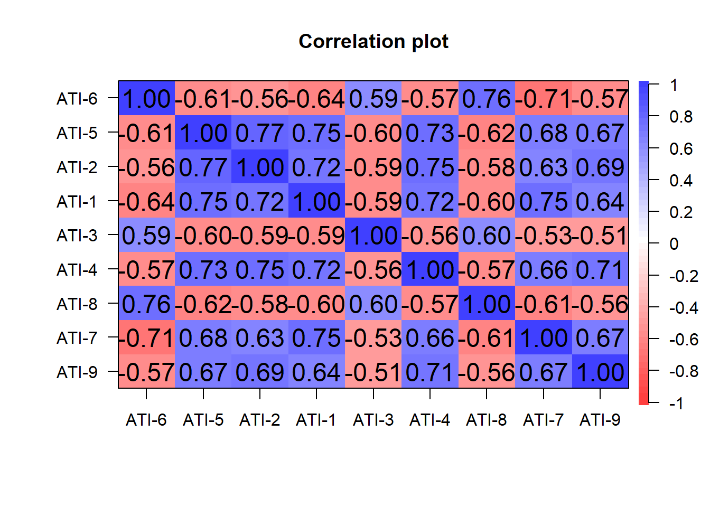
questionnaire$`ATI-6` <- 7 - questionnaire$`ATI-6`
questionnaire$`ATI-3` <- 7 - questionnaire$`ATI-3`
questionnaire$`ATI-8` <- 7 - questionnaire$`ATI-8`psych::cor.plot(r = cor(questionnaire[, str_subset(string = colnames(questionnaire), pattern = "^ATI")]))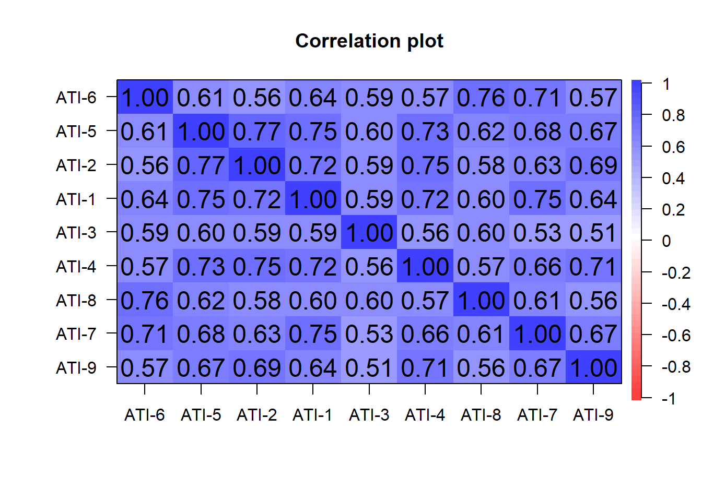
questionnaire$mean_ATI <- rowMeans(questionnaire[, str_subset(string = colnames(questionnaire), pattern = "^ATI")])
questionnaire_rating_wide$mean_ATI <- questionnaire$mean_ATI5.3 analyze and summarize ratings
5.3.1 overall EFA
# ...5.3.2 EFA, CFA single scales
setwd("outputs/CFAs")
#### Vignette 1
out_V1 <- CFAstats(dataset = questionnaire_rating_wide ,
regularExp = "^(?!rat_mean).*_v1$",
labelLatent = "Vignette1",
showPlots = TRUE, computeEFA = TRUE, computeCFA = TRUE, computeCFAMplus = TRUE)Warning in ks.test.default(x = x, y = "pnorm", mean(x), sd(x)): für den
Komogorov-Smirnov-Test sollten keine Bindungen vorhanden sein
Warning in ks.test.default(x = x, y = "pnorm", mean(x), sd(x)): für den
Komogorov-Smirnov-Test sollten keine Bindungen vorhanden sein
Warning in ks.test.default(x = x, y = "pnorm", mean(x), sd(x)): für den
Komogorov-Smirnov-Test sollten keine Bindungen vorhanden sein
Warning in ks.test.default(x = x, y = "pnorm", mean(x), sd(x)): für den
Komogorov-Smirnov-Test sollten keine Bindungen vorhanden sein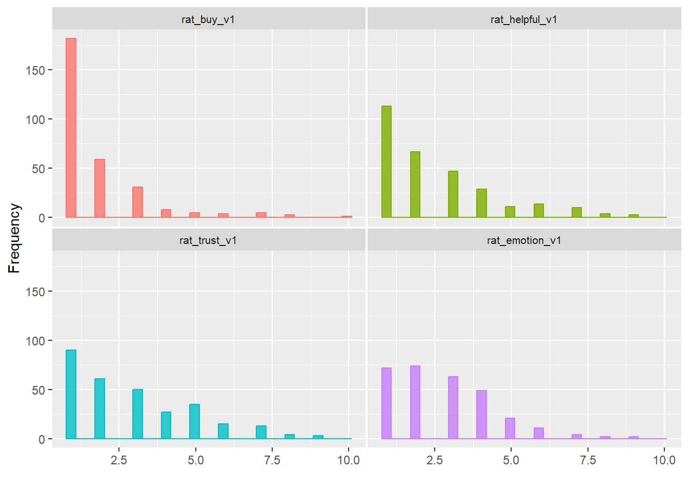
descriptive statistics:
Mean SD Median CoeffofVariation Minimum Maximun Lower Quantile
rat_helpful_v1 2.59 1.87 2 0.72 1 9 1
rat_trust_v1 2.97 1.96 2 0.66 1 9 1
rat_buy_v1 1.82 1.47 1 0.81 1 10 1
rat_emotion_v1 2.81 1.61 3 0.57 1 9 1
Upper Quantile Skewness Kurtosis(-3) KS-Test
rat_helpful_v1 9 1.35 1.27 0
rat_trust_v1 9 0.90 0.05 0
rat_buy_v1 10 2.58 7.49 0
rat_emotion_v1 9 1.00 1.09 0
variables under investigation: rat_helpful_v1 rat_trust_v1 rat_buy_v1 rat_emotion_v1
Cronbachs Alpha: 0.88 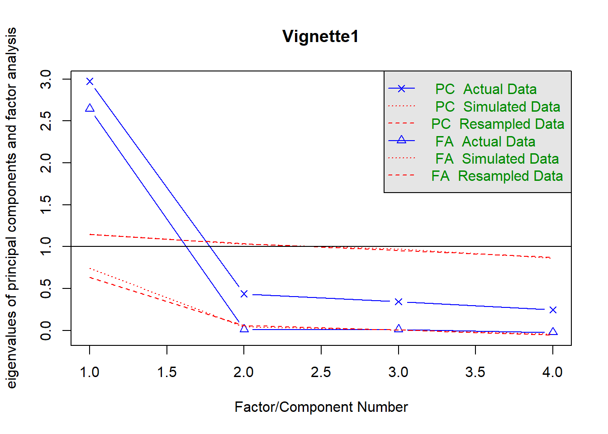
Parallel analysis suggests that the number of factors = 1 and the number of components = 1
Vignette1
Number of components: 1
EFA factor loadings (1 factor solution):
Loadings:
MR1
rat_helpful_v1 0.887
rat_trust_v1 0.731
rat_buy_v1 0.837
rat_emotion_v1 0.790
MR1
SS loadings 2.646
Proportion Var 0.662
CFA summary and fit statistics:
lavaan 0.6.17 ended normally after 22 iterations
Estimator ML
Optimization method NLMINB
Number of model parameters 8
Number of observations 298
Model Test User Model:
Standard Scaled
Test Statistic 1.103 1.078
Degrees of freedom 2 2
P-value (Chi-square) 0.576 0.583
Scaling correction factor 1.023
Yuan-Bentler correction (Mplus variant)
Model Test Baseline Model:
Test statistic 659.620 268.721
Degrees of freedom 6 6
P-value 0.000 0.000
Scaling correction factor 2.455
User Model versus Baseline Model:
Comparative Fit Index (CFI) 1.000 1.000
Tucker-Lewis Index (TLI) 1.004 1.011
Robust Comparative Fit Index (CFI) 1.000
Robust Tucker-Lewis Index (TLI) 1.004
Loglikelihood and Information Criteria:
Loglikelihood user model (H0) -2003.129 -2003.129
Scaling correction factor 2.704
for the MLR correction
Loglikelihood unrestricted model (H1) -2002.578 -2002.578
Scaling correction factor 2.368
for the MLR correction
Akaike (AIC) 4022.259 4022.259
Bayesian (BIC) 4051.836 4051.836
Sample-size adjusted Bayesian (SABIC) 4026.465 4026.465
Root Mean Square Error of Approximation:
RMSEA 0.000 0.000
90 Percent confidence interval - lower 0.000 0.000
90 Percent confidence interval - upper 0.096 0.095
P-value H_0: RMSEA <= 0.050 0.759 0.769
P-value H_0: RMSEA >= 0.080 0.098 0.092
Robust RMSEA 0.000
90 Percent confidence interval - lower 0.000
90 Percent confidence interval - upper 0.097
P-value H_0: Robust RMSEA <= 0.050 0.761
P-value H_0: Robust RMSEA >= 0.080 0.099
Standardized Root Mean Square Residual:
SRMR 0.007 0.007
Parameter Estimates:
Standard errors Sandwich
Information bread Observed
Observed information based on Hessian
Latent Variables:
Estimate Std.Err z-value P(>|z|) Std.lv Std.all
Vignette1 =~
rat_helpful_v1 1.000 1.654 0.887
rat_trust_v1 0.864 0.051 17.115 0.000 1.430 0.731
rat_buy_v1 0.745 0.055 13.553 0.000 1.232 0.840
rat_emotion_v1 0.764 0.047 16.129 0.000 1.264 0.787
Variances:
Estimate Std.Err z-value P(>|z|) Std.lv Std.all
.rat_helpful_v1 0.741 0.232 3.189 0.001 0.741 0.213
.rat_trust_v1 1.777 0.278 6.383 0.000 1.777 0.465
.rat_buy_v1 0.634 0.176 3.603 0.000 0.634 0.294
.rat_emotion_v1 0.984 0.110 8.982 0.000 0.984 0.381
Vignette1 2.735 0.327 8.360 0.000 1.000 1.000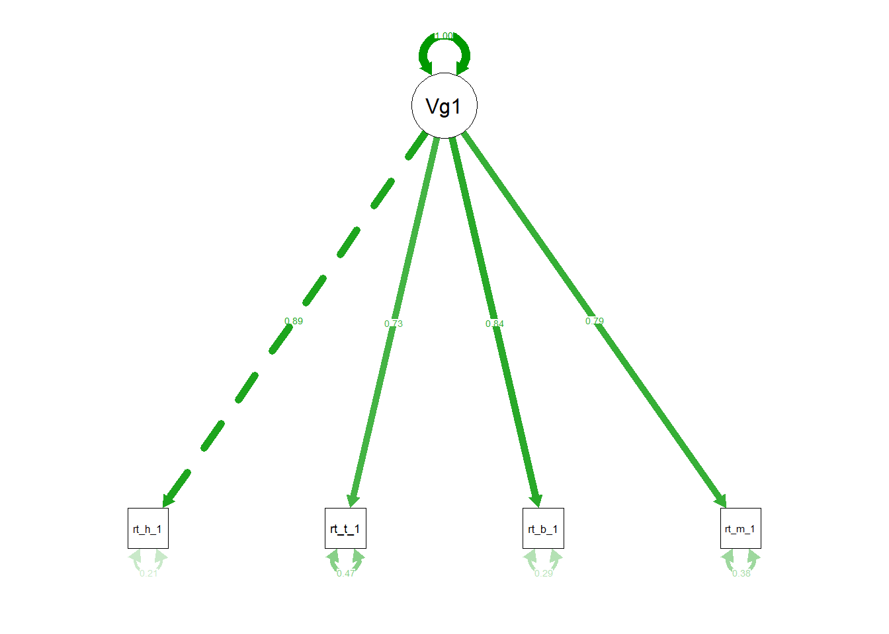
CFA first 6 Modification Indices:
lhs op rhs mi epc sepc.lv sepc.all sepc.nox
13 rat_trust_v1 ~~ rat_buy_v1 1.076 -0.095 -0.095 -0.090 -0.090
12 rat_helpful_v1 ~~ rat_emotion_v1 1.076 -0.113 -0.113 -0.132 -0.132
10 rat_helpful_v1 ~~ rat_trust_v1 0.373 0.074 0.074 0.065 0.065
15 rat_buy_v1 ~~ rat_emotion_v1 0.373 0.049 0.049 0.062 0.062
11 rat_helpful_v1 ~~ rat_buy_v1 0.194 0.049 0.049 0.072 0.072
14 rat_trust_v1 ~~ rat_emotion_v1 0.194 0.044 0.044 0.033 0.033
CFA Mplus summary and fit statistics:
CFA for scale Vignette1Estimated using MLR
Number of obs: 298, number of (free) parameters: 12
Model: Chi2(df = 2) = 1.078, p = 0.5834
Baseline model: Chi2(df = 6) = 268.721, p = 0
Fit Indices:
CFI = 1, TLI = 1, SRMR = 0.006
RMSEA = 0, 90% CI [0, 0.096], p < .05 = 0.764
AIC = 4030.259, BIC = 4074.624
NULL
MC Donalds Omega: 0.88 [ 0.84 , 0.91 ]#### Vignette 2
out_V2 <- CFAstats(dataset = questionnaire_rating_wide ,
regularExp = "^(?!rat_mean).*_v2$",
labelLatent = "Vignette2",
showPlots = TRUE, computeEFA = TRUE, computeCFA = TRUE, computeCFAMplus = TRUE)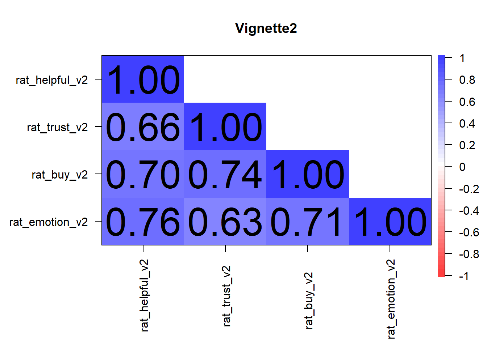
Warning in ks.test.default(x = x, y = "pnorm", mean(x), sd(x)): für den
Komogorov-Smirnov-Test sollten keine Bindungen vorhanden sein
Warning in ks.test.default(x = x, y = "pnorm", mean(x), sd(x)): für den
Komogorov-Smirnov-Test sollten keine Bindungen vorhanden sein
Warning in ks.test.default(x = x, y = "pnorm", mean(x), sd(x)): für den
Komogorov-Smirnov-Test sollten keine Bindungen vorhanden sein
Warning in ks.test.default(x = x, y = "pnorm", mean(x), sd(x)): für den
Komogorov-Smirnov-Test sollten keine Bindungen vorhanden sein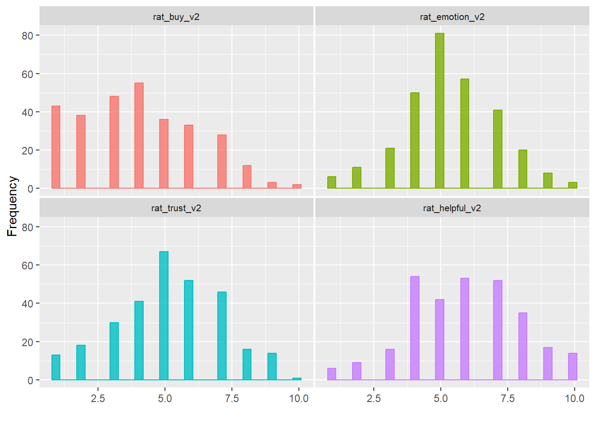
descriptive statistics:
Mean SD Median CoeffofVariation Minimum Maximun Lower Quantile
rat_helpful_v2 5.88 2.06 6 0.35 1 10 1
rat_trust_v2 5.15 1.97 5 0.38 1 10 1
rat_buy_v2 4.03 2.13 4 0.53 1 10 1
rat_emotion_v2 5.33 1.74 5 0.33 1 10 1
Upper Quantile Skewness Kurtosis(-3) KS-Test
rat_helpful_v2 10 -0.04 -0.44 0
rat_trust_v2 10 -0.12 -0.40 0
rat_buy_v2 10 0.35 -0.63 0
rat_emotion_v2 10 0.01 0.10 0
variables under investigation: rat_helpful_v2 rat_trust_v2 rat_buy_v2 rat_emotion_v2
Cronbachs Alpha: 0.9 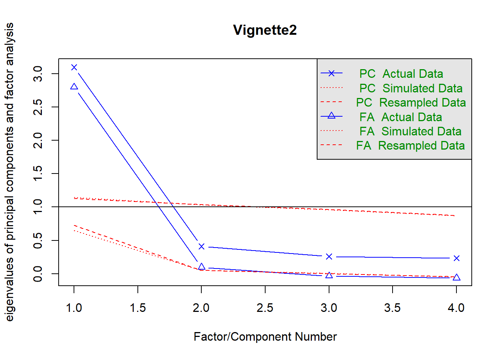
Parallel analysis suggests that the number of factors = 1 and the number of components = 1
Vignette2
Number of components: 1
EFA factor loadings (1 factor solution):
Loadings:
MR1
rat_helpful_v2 0.846
rat_trust_v2 0.797
rat_buy_v2 0.863
rat_emotion_v2 0.838
MR1
SS loadings 2.798
Proportion Var 0.699
CFA summary and fit statistics:
lavaan 0.6.17 ended normally after 23 iterations
Estimator ML
Optimization method NLMINB
Number of model parameters 8
Number of observations 298
Model Test User Model:
Standard Scaled
Test Statistic 23.212 18.280
Degrees of freedom 2 2
P-value (Chi-square) 0.000 0.000
Scaling correction factor 1.270
Yuan-Bentler correction (Mplus variant)
Model Test Baseline Model:
Test statistic 764.270 549.187
Degrees of freedom 6 6
P-value 0.000 0.000
Scaling correction factor 1.392
User Model versus Baseline Model:
Comparative Fit Index (CFI) 0.972 0.970
Tucker-Lewis Index (TLI) 0.916 0.910
Robust Comparative Fit Index (CFI) 0.973
Robust Tucker-Lewis Index (TLI) 0.918
Loglikelihood and Information Criteria:
Loglikelihood user model (H0) -2126.928 -2126.928
Scaling correction factor 1.141
for the MLR correction
Loglikelihood unrestricted model (H1) -2115.321 -2115.321
Scaling correction factor 1.167
for the MLR correction
Akaike (AIC) 4269.855 4269.855
Bayesian (BIC) 4299.432 4299.432
Sample-size adjusted Bayesian (SABIC) 4274.061 4274.061
Root Mean Square Error of Approximation:
RMSEA 0.189 0.165
90 Percent confidence interval - lower 0.125 0.108
90 Percent confidence interval - upper 0.261 0.230
P-value H_0: RMSEA <= 0.050 0.000 0.001
P-value H_0: RMSEA >= 0.080 0.997 0.991
Robust RMSEA 0.186
90 Percent confidence interval - lower 0.114
90 Percent confidence interval - upper 0.269
P-value H_0: Robust RMSEA <= 0.050 0.001
P-value H_0: Robust RMSEA >= 0.080 0.991
Standardized Root Mean Square Residual:
SRMR 0.028 0.028
Parameter Estimates:
Standard errors Sandwich
Information bread Observed
Observed information based on Hessian
Latent Variables:
Estimate Std.Err z-value P(>|z|) Std.lv Std.all
Vignette2 =~
rat_helpful_v2 1.000 1.743 0.847
rat_trust_v2 0.901 0.063 14.414 0.000 1.571 0.798
rat_buy_v2 1.044 0.070 14.907 0.000 1.820 0.856
rat_emotion_v2 0.840 0.043 19.651 0.000 1.465 0.842
Variances:
Estimate Std.Err z-value P(>|z|) Std.lv Std.all
.rat_helpful_v2 1.193 0.182 6.555 0.000 1.193 0.282
.rat_trust_v2 1.402 0.171 8.216 0.000 1.402 0.362
.rat_buy_v2 1.204 0.192 6.256 0.000 1.204 0.267
.rat_emotion_v2 0.880 0.109 8.088 0.000 0.880 0.291
Vignette2 3.038 0.334 9.102 0.000 1.000 1.000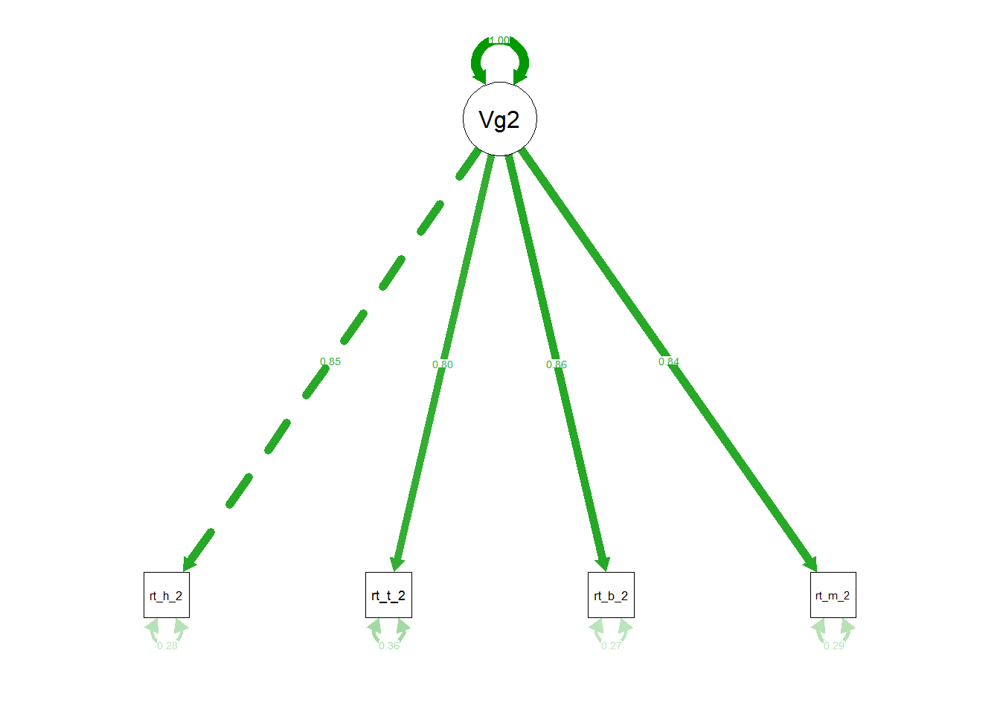
CFA first 6 Modification Indices:
lhs op rhs mi epc sepc.lv sepc.all sepc.nox
12 rat_helpful_v2 ~~ rat_emotion_v2 23.968 0.539 0.539 0.526 0.526
13 rat_trust_v2 ~~ rat_buy_v2 23.968 0.604 0.604 0.465 0.465
11 rat_helpful_v2 ~~ rat_buy_v2 10.184 -0.439 -0.439 -0.366 -0.366
14 rat_trust_v2 ~~ rat_emotion_v2 10.184 -0.318 -0.318 -0.287 -0.287
15 rat_buy_v2 ~~ rat_emotion_v2 2.984 -0.199 -0.199 -0.194 -0.194
10 rat_helpful_v2 ~~ rat_trust_v2 2.984 -0.205 -0.205 -0.158 -0.158
CFA Mplus summary and fit statistics:
CFA for scale Vignette2Estimated using MLR
Number of obs: 298, number of (free) parameters: 12
Model: Chi2(df = 2) = 18.28, p = 1e-04
Baseline model: Chi2(df = 6) = 549.187, p = 0
Fit Indices:
CFI = 0.97, TLI = 0.91, SRMR = 0.023
RMSEA = 0.165, 90% CI [0.101, 0.238], p < .05 = 0.002
AIC = 4277.855, BIC = 4322.22
NULL
MC Donalds Omega: 0.9 [ 0.88 , 0.92 ]#### Vignette 3
out_V3 <- CFAstats(dataset = questionnaire_rating_wide ,
regularExp = "^(?!rat_mean).*_v3$",
labelLatent = "Vignette3",
showPlots = TRUE, computeEFA = TRUE, computeCFA = TRUE, computeCFAMplus = TRUE)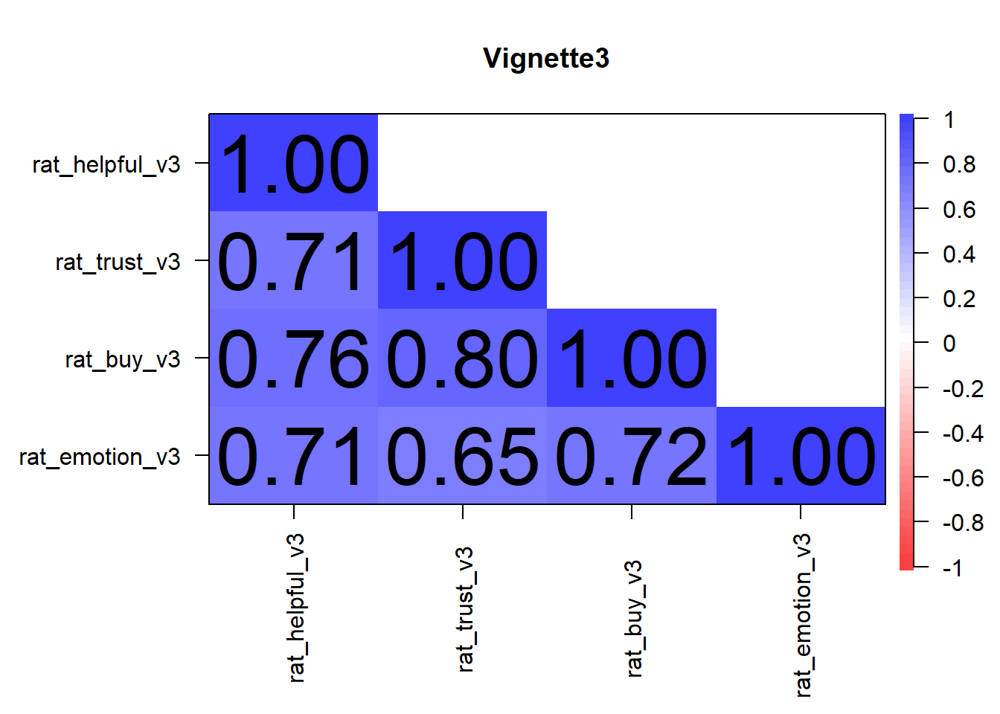
Warning in ks.test.default(x = x, y = "pnorm", mean(x), sd(x)): für den
Komogorov-Smirnov-Test sollten keine Bindungen vorhanden sein
Warning in ks.test.default(x = x, y = "pnorm", mean(x), sd(x)): für den
Komogorov-Smirnov-Test sollten keine Bindungen vorhanden sein
Warning in ks.test.default(x = x, y = "pnorm", mean(x), sd(x)): für den
Komogorov-Smirnov-Test sollten keine Bindungen vorhanden sein
Warning in ks.test.default(x = x, y = "pnorm", mean(x), sd(x)): für den
Komogorov-Smirnov-Test sollten keine Bindungen vorhanden sein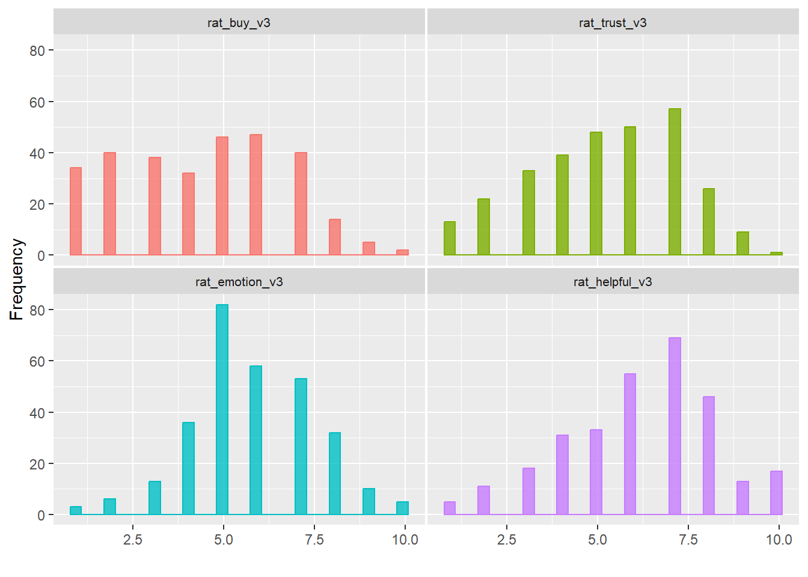
descriptive statistics:
Mean SD Median CoeffofVariation Minimum Maximun Lower Quantile
rat_helpful_v3 6.17 2.05 6 0.33 1 10 1
rat_trust_v3 5.20 2.05 5 0.39 1 10 1
rat_buy_v3 4.45 2.22 5 0.50 1 10 1
rat_emotion_v3 5.78 1.69 6 0.29 1 10 1
Upper Quantile Skewness Kurtosis(-3) KS-Test
rat_helpful_v3 10 -0.33 -0.25 0
rat_trust_v3 10 -0.23 -0.73 0
rat_buy_v3 10 0.06 -0.95 0
rat_emotion_v3 10 -0.01 0.09 0
variables under investigation: rat_helpful_v3 rat_trust_v3 rat_buy_v3 rat_emotion_v3
Cronbachs Alpha: 0.91 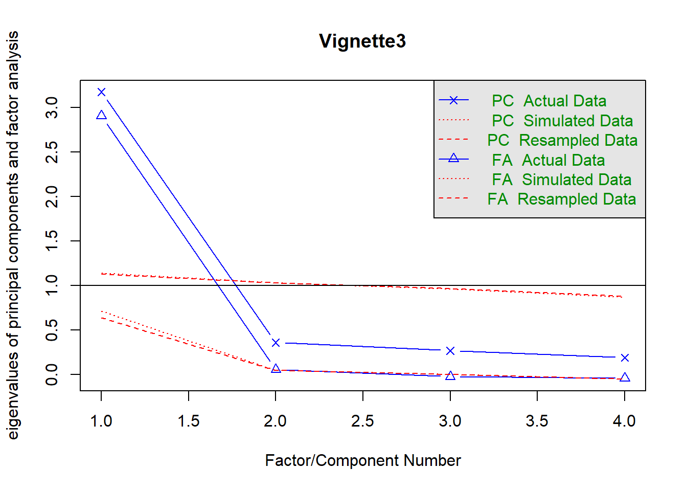
Parallel analysis suggests that the number of factors = 1 and the number of components = 1
Vignette3
Number of components: 1
EFA factor loadings (1 factor solution):
Loadings:
MR1
rat_helpful_v3 0.853
rat_trust_v3 0.844
rat_buy_v3 0.909
rat_emotion_v3 0.800
MR1
SS loadings 2.906
Proportion Var 0.727
CFA summary and fit statistics:
lavaan 0.6.17 ended normally after 19 iterations
Estimator ML
Optimization method NLMINB
Number of model parameters 8
Number of observations 298
Model Test User Model:
Standard Scaled
Test Statistic 9.833 5.153
Degrees of freedom 2 2
P-value (Chi-square) 0.007 0.076
Scaling correction factor 1.908
Yuan-Bentler correction (Mplus variant)
Model Test Baseline Model:
Test statistic 838.718 395.398
Degrees of freedom 6 6
P-value 0.000 0.000
Scaling correction factor 2.121
User Model versus Baseline Model:
Comparative Fit Index (CFI) 0.991 0.992
Tucker-Lewis Index (TLI) 0.972 0.976
Robust Comparative Fit Index (CFI) 0.993
Robust Tucker-Lewis Index (TLI) 0.978
Loglikelihood and Information Criteria:
Loglikelihood user model (H0) -2097.205 -2097.205
Scaling correction factor 1.499
for the MLR correction
Loglikelihood unrestricted model (H1) -2092.289 -2092.289
Scaling correction factor 1.581
for the MLR correction
Akaike (AIC) 4210.410 4210.410
Bayesian (BIC) 4239.987 4239.987
Sample-size adjusted Bayesian (SABIC) 4214.616 4214.616
Root Mean Square Error of Approximation:
RMSEA 0.115 0.073
90 Percent confidence interval - lower 0.051 0.015
90 Percent confidence interval - upper 0.190 0.130
P-value H_0: RMSEA <= 0.050 0.049 0.203
P-value H_0: RMSEA >= 0.080 0.836 0.478
Robust RMSEA 0.100
90 Percent confidence interval - lower 0.000
90 Percent confidence interval - upper 0.212
P-value H_0: Robust RMSEA <= 0.050 0.156
P-value H_0: Robust RMSEA >= 0.080 0.713
Standardized Root Mean Square Residual:
SRMR 0.017 0.017
Parameter Estimates:
Standard errors Sandwich
Information bread Observed
Observed information based on Hessian
Latent Variables:
Estimate Std.Err z-value P(>|z|) Std.lv Std.all
Vignette3 =~
rat_helpful_v3 1.000 1.729 0.843
rat_trust_v3 1.011 0.060 16.969 0.000 1.748 0.855
rat_buy_v3 1.167 0.068 17.088 0.000 2.018 0.912
rat_emotion_v3 0.778 0.047 16.466 0.000 1.344 0.796
Variances:
Estimate Std.Err z-value P(>|z|) Std.lv Std.all
.rat_helpful_v3 1.218 0.206 5.915 0.000 1.218 0.290
.rat_trust_v3 1.127 0.167 6.737 0.000 1.127 0.270
.rat_buy_v3 0.826 0.183 4.523 0.000 0.826 0.169
.rat_emotion_v3 1.048 0.137 7.628 0.000 1.048 0.367
Vignette3 2.988 0.343 8.702 0.000 1.000 1.000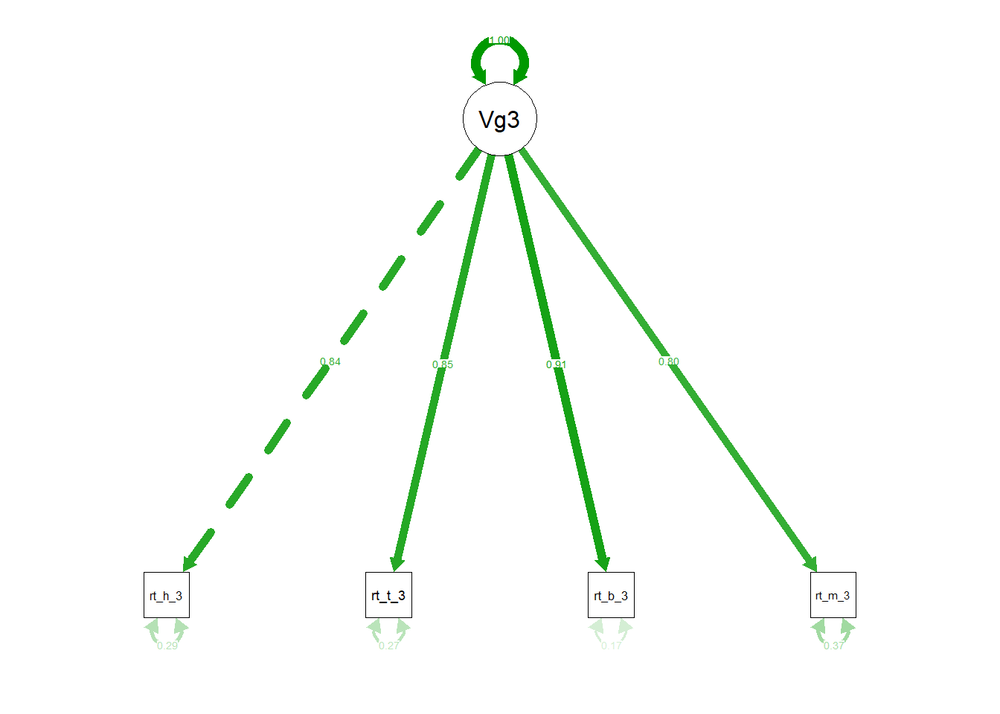
CFA first 6 Modification Indices:
lhs op rhs mi epc sepc.lv sepc.all sepc.nox
13 rat_trust_v3 ~~ rat_buy_v3 9.917 0.433 0.433 0.448 0.448
12 rat_helpful_v3 ~~ rat_emotion_v3 9.917 0.285 0.285 0.252 0.252
14 rat_trust_v3 ~~ rat_emotion_v3 3.934 -0.179 -0.179 -0.165 -0.165
11 rat_helpful_v3 ~~ rat_buy_v3 3.934 -0.266 -0.266 -0.265 -0.265
10 rat_helpful_v3 ~~ rat_trust_v3 1.208 -0.125 -0.125 -0.106 -0.106
15 rat_buy_v3 ~~ rat_emotion_v3 1.208 -0.112 -0.112 -0.120 -0.120
CFA Mplus summary and fit statistics:
CFA for scale Vignette3Estimated using MLR
Number of obs: 298, number of (free) parameters: 12
Model: Chi2(df = 2) = 5.153, p = 0.076
Baseline model: Chi2(df = 6) = 395.398, p = 0
Fit Indices:
CFI = 0.992, TLI = 0.976, SRMR = 0.015
RMSEA = 0.073, 90% CI [0, 0.153], p < .05 = 0.232
AIC = 4218.41, BIC = 4262.775
NULL
MC Donalds Omega: 0.92 [ 0.9 , 0.93 ]#### Vignette 4
out_V4 <- CFAstats(dataset = questionnaire_rating_wide ,
regularExp = "^(?!rat_mean).*_v4$",
labelLatent = "Vignette4",
showPlots = TRUE, computeEFA = TRUE, computeCFA = TRUE, computeCFAMplus = TRUE)Warning in ks.test.default(x = x, y = "pnorm", mean(x), sd(x)): für den
Komogorov-Smirnov-Test sollten keine Bindungen vorhanden sein
Warning in ks.test.default(x = x, y = "pnorm", mean(x), sd(x)): für den
Komogorov-Smirnov-Test sollten keine Bindungen vorhanden sein
Warning in ks.test.default(x = x, y = "pnorm", mean(x), sd(x)): für den
Komogorov-Smirnov-Test sollten keine Bindungen vorhanden sein
Warning in ks.test.default(x = x, y = "pnorm", mean(x), sd(x)): für den
Komogorov-Smirnov-Test sollten keine Bindungen vorhanden sein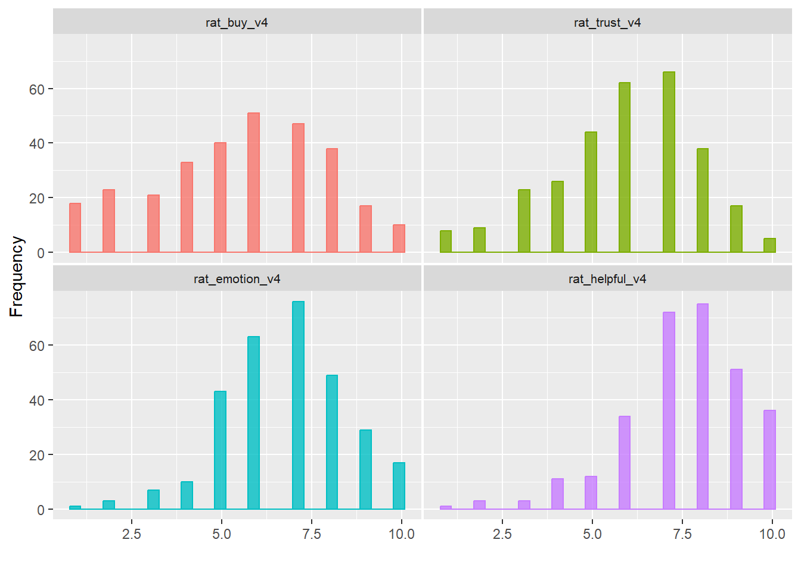
descriptive statistics:
Mean SD Median CoeffofVariation Minimum Maximun Lower Quantile
rat_helpful_v4 7.54 1.70 8 0.23 1 10 1
rat_trust_v4 5.91 1.97 6 0.33 1 10 1
rat_buy_v4 5.54 2.34 6 0.42 1 10 1
rat_emotion_v4 6.77 1.69 7 0.25 1 10 1
Upper Quantile Skewness Kurtosis(-3) KS-Test
rat_helpful_v4 10 -0.82 1.03 0
rat_trust_v4 10 -0.43 -0.16 0
rat_buy_v4 10 -0.23 -0.71 0
rat_emotion_v4 10 -0.26 0.21 0
variables under investigation: rat_helpful_v4 rat_trust_v4 rat_buy_v4 rat_emotion_v4
Cronbachs Alpha: 0.89 Parallel analysis suggests that the number of factors = 2 and the number of components = 1
Vignette4
Number of components: 1
EFA factor loadings (1 factor solution):
Loadings:
MR1
rat_helpful_v4 0.757
rat_trust_v4 0.794
rat_buy_v4 0.887
rat_emotion_v4 0.832
MR1
SS loadings 2.683
Proportion Var 0.671
CFA summary and fit statistics:
lavaan 0.6.17 ended normally after 22 iterations
Estimator ML
Optimization method NLMINB
Number of model parameters 8
Number of observations 298
Model Test User Model:
Standard Scaled
Test Statistic 28.370 34.601
Degrees of freedom 2 2
P-value (Chi-square) 0.000 0.000
Scaling correction factor 0.820
Yuan-Bentler correction (Mplus variant)
Model Test Baseline Model:
Test statistic 705.072 506.537
Degrees of freedom 6 6
P-value 0.000 0.000
Scaling correction factor 1.392
User Model versus Baseline Model:
Comparative Fit Index (CFI) 0.962 0.935
Tucker-Lewis Index (TLI) 0.887 0.805
Robust Comparative Fit Index (CFI) 0.962
Robust Tucker-Lewis Index (TLI) 0.885
Loglikelihood and Information Criteria:
Loglikelihood user model (H0) -2120.221 -2120.221
Scaling correction factor 1.362
for the MLR correction
Loglikelihood unrestricted model (H1) -2106.036 -2106.036
Scaling correction factor 1.253
for the MLR correction
Akaike (AIC) 4256.442 4256.442
Bayesian (BIC) 4286.019 4286.019
Sample-size adjusted Bayesian (SABIC) 4260.648 4260.648
Root Mean Square Error of Approximation:
RMSEA 0.210 0.234
90 Percent confidence interval - lower 0.146 0.163
90 Percent confidence interval - upper 0.282 0.313
P-value H_0: RMSEA <= 0.050 0.000 0.000
P-value H_0: RMSEA >= 0.080 0.999 1.000
Robust RMSEA 0.212
90 Percent confidence interval - lower 0.153
90 Percent confidence interval - upper 0.276
P-value H_0: Robust RMSEA <= 0.050 0.000
P-value H_0: Robust RMSEA >= 0.080 1.000
Standardized Root Mean Square Residual:
SRMR 0.036 0.036
Parameter Estimates:
Standard errors Sandwich
Information bread Observed
Observed information based on Hessian
Latent Variables:
Estimate Std.Err z-value P(>|z|) Std.lv Std.all
Vignette4 =~
rat_helpful_v4 1.000 1.265 0.747
rat_trust_v4 1.266 0.122 10.393 0.000 1.601 0.816
rat_buy_v4 1.651 0.157 10.499 0.000 2.089 0.894
rat_emotion_v4 1.082 0.080 13.449 0.000 1.369 0.811
Variances:
Estimate Std.Err z-value P(>|z|) Std.lv Std.all
.rat_helpful_v4 1.271 0.178 7.147 0.000 1.271 0.443
.rat_trust_v4 1.286 0.174 7.383 0.000 1.286 0.334
.rat_buy_v4 1.098 0.226 4.857 0.000 1.098 0.201
.rat_emotion_v4 0.976 0.146 6.688 0.000 0.976 0.342
Vignette4 1.601 0.287 5.572 0.000 1.000 1.000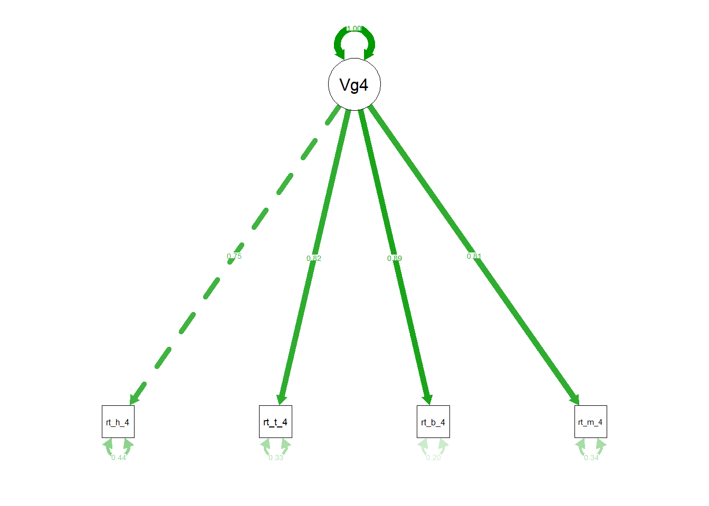
CFA first 6 Modification Indices:
lhs op rhs mi epc sepc.lv sepc.all sepc.nox
13 rat_trust_v4 ~~ rat_buy_v4 30.089 0.942 0.942 0.793 0.793
12 rat_helpful_v4 ~~ rat_emotion_v4 30.089 0.488 0.488 0.438 0.438
15 rat_buy_v4 ~~ rat_emotion_v4 8.751 -0.432 -0.432 -0.418 -0.418
10 rat_helpful_v4 ~~ rat_trust_v4 8.751 -0.306 -0.306 -0.239 -0.239
14 rat_trust_v4 ~~ rat_emotion_v4 5.843 -0.262 -0.262 -0.234 -0.234
11 rat_helpful_v4 ~~ rat_buy_v4 5.843 -0.316 -0.316 -0.267 -0.267
CFA Mplus summary and fit statistics:
CFA for scale Vignette4Estimated using MLR
Number of obs: 298, number of (free) parameters: 12
Model: Chi2(df = 2) = 34.601, p = 0
Baseline model: Chi2(df = 6) = 506.537, p = 0
Fit Indices:
CFI = 0.935, TLI = 0.805, SRMR = 0.03
RMSEA = 0.234, 90% CI [0.169, 0.305], p < .05 = 0
AIC = 4264.442, BIC = 4308.808
NULL
MC Donalds Omega: 0.9 [ 0.87 , 0.92 ]#### Vignette 5
out_V5 <- CFAstats(dataset = questionnaire_rating_wide ,
regularExp = "^(?!rat_mean).*_v5$",
labelLatent = "Vignette5",
showPlots = TRUE, computeEFA = TRUE, computeCFA = TRUE, computeCFAMplus = TRUE)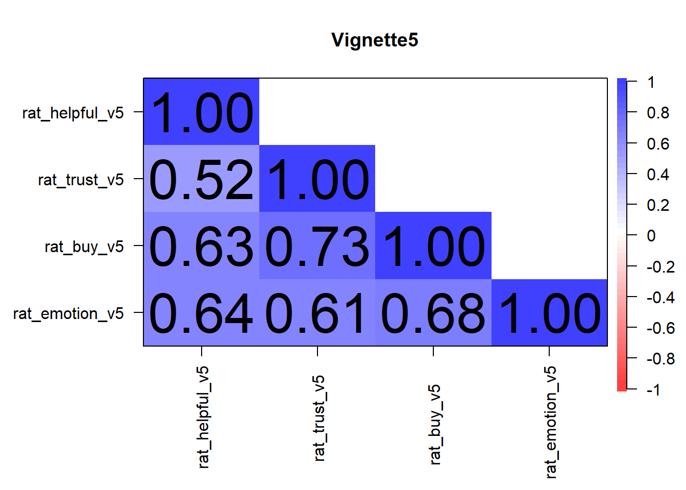
Warning in ks.test.default(x = x, y = "pnorm", mean(x), sd(x)): für den
Komogorov-Smirnov-Test sollten keine Bindungen vorhanden sein
Warning in ks.test.default(x = x, y = "pnorm", mean(x), sd(x)): für den
Komogorov-Smirnov-Test sollten keine Bindungen vorhanden sein
Warning in ks.test.default(x = x, y = "pnorm", mean(x), sd(x)): für den
Komogorov-Smirnov-Test sollten keine Bindungen vorhanden sein
Warning in ks.test.default(x = x, y = "pnorm", mean(x), sd(x)): für den
Komogorov-Smirnov-Test sollten keine Bindungen vorhanden sein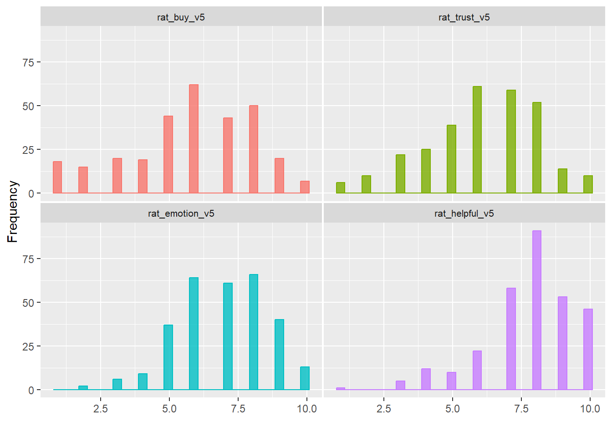
descriptive statistics:
Mean SD Median CoeffofVariation Minimum Maximun Lower Quantile
rat_helpful_v5 7.78 1.67 8 0.21 1 10 1
rat_trust_v5 6.07 2.01 6 0.33 1 10 1
rat_buy_v5 5.80 2.26 6 0.39 1 10 1
rat_emotion_v5 6.95 1.62 7 0.23 2 10 2
Upper Quantile Skewness Kurtosis(-3) KS-Test
rat_helpful_v5 10 -0.92 1.05 0
rat_trust_v5 10 -0.40 -0.23 0
rat_buy_v5 10 -0.46 -0.44 0
rat_emotion_v5 10 -0.31 -0.15 0
variables under investigation: rat_helpful_v5 rat_trust_v5 rat_buy_v5 rat_emotion_v5
Cronbachs Alpha: 0.87 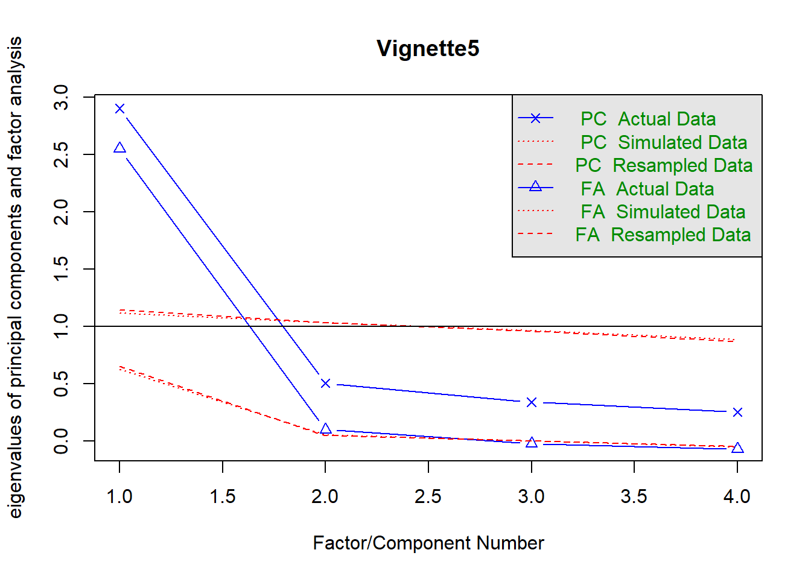
Parallel analysis suggests that the number of factors = 2 and the number of components = 1
Vignette5
Number of components: 1
EFA factor loadings (1 factor solution):
Loadings:
MR1
rat_helpful_v5 0.725
rat_trust_v5 0.770
rat_buy_v5 0.884
rat_emotion_v5 0.809
MR1
SS loadings 2.554
Proportion Var 0.639
CFA summary and fit statistics:
lavaan 0.6.17 ended normally after 20 iterations
Estimator ML
Optimization method NLMINB
Number of model parameters 8
Number of observations 298
Model Test User Model:
Standard Scaled
Test Statistic 16.056 15.769
Degrees of freedom 2 2
P-value (Chi-square) 0.000 0.000
Scaling correction factor 1.018
Yuan-Bentler correction (Mplus variant)
Model Test Baseline Model:
Test statistic 619.816 418.407
Degrees of freedom 6 6
P-value 0.000 0.000
Scaling correction factor 1.481
User Model versus Baseline Model:
Comparative Fit Index (CFI) 0.977 0.967
Tucker-Lewis Index (TLI) 0.931 0.900
Robust Comparative Fit Index (CFI) 0.977
Robust Tucker-Lewis Index (TLI) 0.931
Loglikelihood and Information Criteria:
Loglikelihood user model (H0) -2134.080 -2134.080
Scaling correction factor 1.371
for the MLR correction
Loglikelihood unrestricted model (H1) -2126.052 -2126.052
Scaling correction factor 1.300
for the MLR correction
Akaike (AIC) 4284.161 4284.161
Bayesian (BIC) 4313.738 4313.738
Sample-size adjusted Bayesian (SABIC) 4288.367 4288.367
Root Mean Square Error of Approximation:
RMSEA 0.154 0.152
90 Percent confidence interval - lower 0.090 0.089
90 Percent confidence interval - upper 0.227 0.225
P-value H_0: RMSEA <= 0.050 0.005 0.005
P-value H_0: RMSEA >= 0.080 0.970 0.968
Robust RMSEA 0.153
90 Percent confidence interval - lower 0.089
90 Percent confidence interval - upper 0.228
P-value H_0: Robust RMSEA <= 0.050 0.006
P-value H_0: Robust RMSEA >= 0.080 0.968
Standardized Root Mean Square Residual:
SRMR 0.030 0.030
Parameter Estimates:
Standard errors Sandwich
Information bread Observed
Observed information based on Hessian
Latent Variables:
Estimate Std.Err z-value P(>|z|) Std.lv Std.all
Vignette5 =~
rat_helpful_v5 1.000 1.197 0.720
rat_trust_v5 1.323 0.125 10.589 0.000 1.583 0.789
rat_buy_v5 1.671 0.148 11.310 0.000 1.999 0.887
rat_emotion_v5 1.070 0.086 12.497 0.000 1.280 0.791
Variances:
Estimate Std.Err z-value P(>|z|) Std.lv Std.all
.rat_helpful_v5 1.333 0.158 8.422 0.000 1.333 0.482
.rat_trust_v5 1.516 0.225 6.728 0.000 1.516 0.377
.rat_buy_v5 1.080 0.263 4.105 0.000 1.080 0.213
.rat_emotion_v5 0.983 0.130 7.566 0.000 0.983 0.375
Vignette5 1.432 0.255 5.623 0.000 1.000 1.000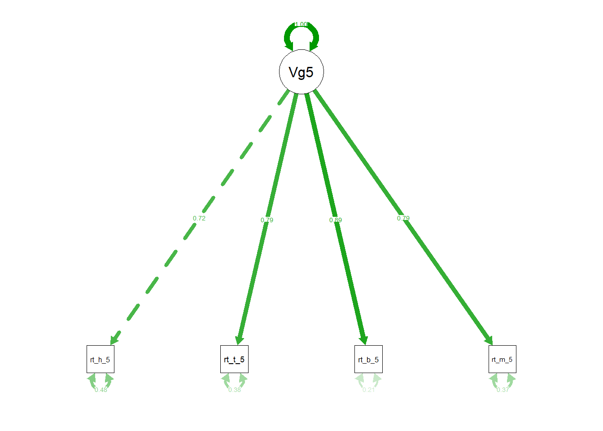
CFA first 6 Modification Indices:
lhs op rhs mi epc sepc.lv sepc.all sepc.nox
13 rat_trust_v5 ~~ rat_buy_v5 15.366 0.738 0.738 0.577 0.577
12 rat_helpful_v5 ~~ rat_emotion_v5 15.366 0.357 0.357 0.312 0.312
10 rat_helpful_v5 ~~ rat_trust_v5 7.788 -0.315 -0.315 -0.221 -0.221
15 rat_buy_v5 ~~ rat_emotion_v5 7.788 -0.425 -0.425 -0.413 -0.413
14 rat_trust_v5 ~~ rat_emotion_v5 1.188 -0.126 -0.126 -0.104 -0.104
11 rat_helpful_v5 ~~ rat_buy_v5 1.188 -0.149 -0.149 -0.124 -0.124
CFA Mplus summary and fit statistics:
CFA for scale Vignette5Estimated using MLR
Number of obs: 298, number of (free) parameters: 12
Model: Chi2(df = 2) = 15.77, p = 4e-04
Baseline model: Chi2(df = 6) = 418.407, p = 0
Fit Indices:
CFI = 0.967, TLI = 0.9, SRMR = 0.025
RMSEA = 0.152, 90% CI [0.088, 0.226], p < .05 = 0.006
AIC = 4292.161, BIC = 4336.526
NULL
MC Donalds Omega: 0.88 [ 0.85 , 0.91 ]#### Vignette 6
out_V6 <- CFAstats(dataset = questionnaire_rating_wide ,
regularExp = "^(?!rat_mean).*_v6$",
labelLatent = "Vignette6",
showPlots = TRUE, computeEFA = TRUE, computeCFA = TRUE, computeCFAMplus = TRUE)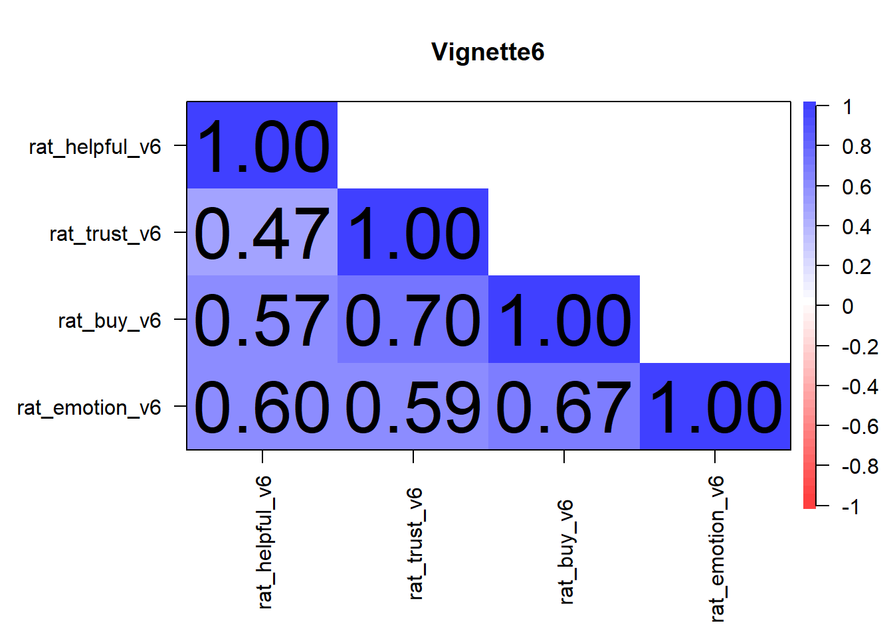
Warning in ks.test.default(x = x, y = "pnorm", mean(x), sd(x)): für den
Komogorov-Smirnov-Test sollten keine Bindungen vorhanden sein
Warning in ks.test.default(x = x, y = "pnorm", mean(x), sd(x)): für den
Komogorov-Smirnov-Test sollten keine Bindungen vorhanden sein
Warning in ks.test.default(x = x, y = "pnorm", mean(x), sd(x)): für den
Komogorov-Smirnov-Test sollten keine Bindungen vorhanden sein
Warning in ks.test.default(x = x, y = "pnorm", mean(x), sd(x)): für den
Komogorov-Smirnov-Test sollten keine Bindungen vorhanden sein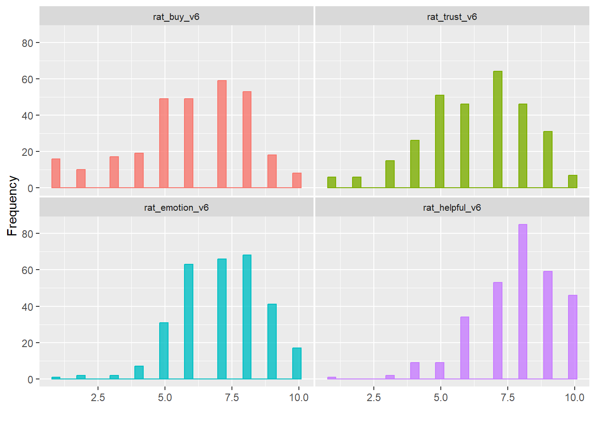
descriptive statistics:
Mean SD Median CoeffofVariation Minimum Maximun Lower Quantile
rat_helpful_v6 7.83 1.59 8 0.20 1 10 1
rat_trust_v6 6.25 1.97 6 0.32 1 10 1
rat_buy_v6 5.98 2.17 6 0.36 1 10 1
rat_emotion_v6 7.10 1.59 7 0.22 1 10 1
Upper Quantile Skewness Kurtosis(-3) KS-Test
rat_helpful_v6 10 -0.79 0.90 0
rat_trust_v6 10 -0.42 -0.19 0
rat_buy_v6 10 -0.57 -0.18 0
rat_emotion_v6 10 -0.40 0.41 0
variables under investigation: rat_helpful_v6 rat_trust_v6 rat_buy_v6 rat_emotion_v6
Cronbachs Alpha: 0.86 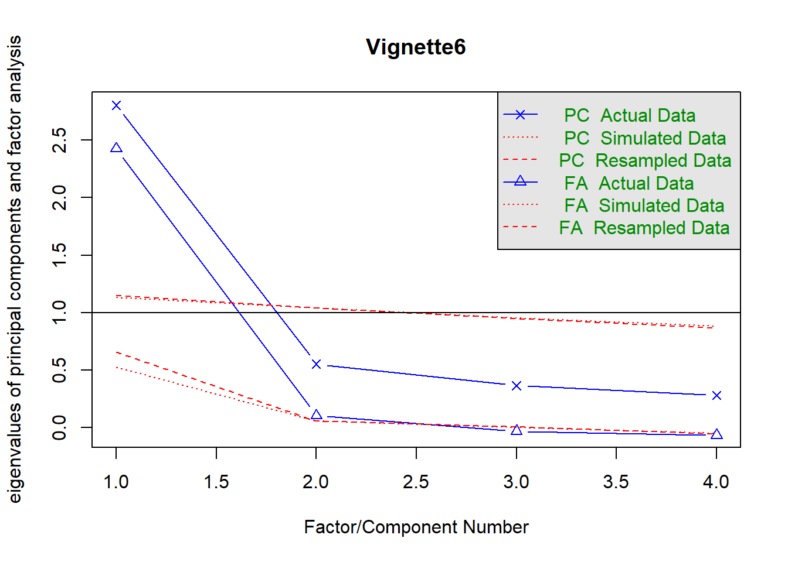
Parallel analysis suggests that the number of factors = 2 and the number of components = 1
Vignette6
Number of components: 1
EFA factor loadings (1 factor solution):
Loadings:
MR1
rat_helpful_v6 0.679
rat_trust_v6 0.755
rat_buy_v6 0.867
rat_emotion_v6 0.802
MR1
SS loadings 2.426
Proportion Var 0.607
CFA summary and fit statistics:
lavaan 0.6.17 ended normally after 20 iterations
Estimator ML
Optimization method NLMINB
Number of model parameters 8
Number of observations 298
Model Test User Model:
Standard Scaled
Test Statistic 13.819 11.035
Degrees of freedom 2 2
P-value (Chi-square) 0.001 0.004
Scaling correction factor 1.252
Yuan-Bentler correction (Mplus variant)
Model Test Baseline Model:
Test statistic 551.748 349.329
Degrees of freedom 6 6
P-value 0.000 0.000
Scaling correction factor 1.579
User Model versus Baseline Model:
Comparative Fit Index (CFI) 0.978 0.974
Tucker-Lewis Index (TLI) 0.935 0.921
Robust Comparative Fit Index (CFI) 0.979
Robust Tucker-Lewis Index (TLI) 0.937
Loglikelihood and Information Criteria:
Loglikelihood user model (H0) -2129.342 -2129.342
Scaling correction factor 1.431
for the MLR correction
Loglikelihood unrestricted model (H1) -2122.432 -2122.432
Scaling correction factor 1.395
for the MLR correction
Akaike (AIC) 4274.683 4274.683
Bayesian (BIC) 4304.260 4304.260
Sample-size adjusted Bayesian (SABIC) 4278.889 4278.889
Root Mean Square Error of Approximation:
RMSEA 0.141 0.123
90 Percent confidence interval - lower 0.077 0.065
90 Percent confidence interval - upper 0.215 0.190
P-value H_0: RMSEA <= 0.050 0.012 0.022
P-value H_0: RMSEA >= 0.080 0.943 0.897
Robust RMSEA 0.138
90 Percent confidence interval - lower 0.066
90 Percent confidence interval - upper 0.222
P-value H_0: Robust RMSEA <= 0.050 0.024
P-value H_0: Robust RMSEA >= 0.080 0.914
Standardized Root Mean Square Residual:
SRMR 0.030 0.030
Parameter Estimates:
Standard errors Sandwich
Information bread Observed
Observed information based on Hessian
Latent Variables:
Estimate Std.Err z-value P(>|z|) Std.lv Std.all
Vignette6 =~
rat_helpful_v6 1.000 1.067 0.674
rat_trust_v6 1.429 0.181 7.907 0.000 1.525 0.774
rat_buy_v6 1.769 0.202 8.767 0.000 1.888 0.871
rat_emotion_v6 1.164 0.136 8.566 0.000 1.242 0.783
Variances:
Estimate Std.Err z-value P(>|z|) Std.lv Std.all
.rat_helpful_v6 1.370 0.183 7.485 0.000 1.370 0.546
.rat_trust_v6 1.554 0.209 7.447 0.000 1.554 0.401
.rat_buy_v6 1.130 0.232 4.862 0.000 1.130 0.241
.rat_emotion_v6 0.974 0.151 6.463 0.000 0.974 0.387
Vignette6 1.139 0.238 4.777 0.000 1.000 1.000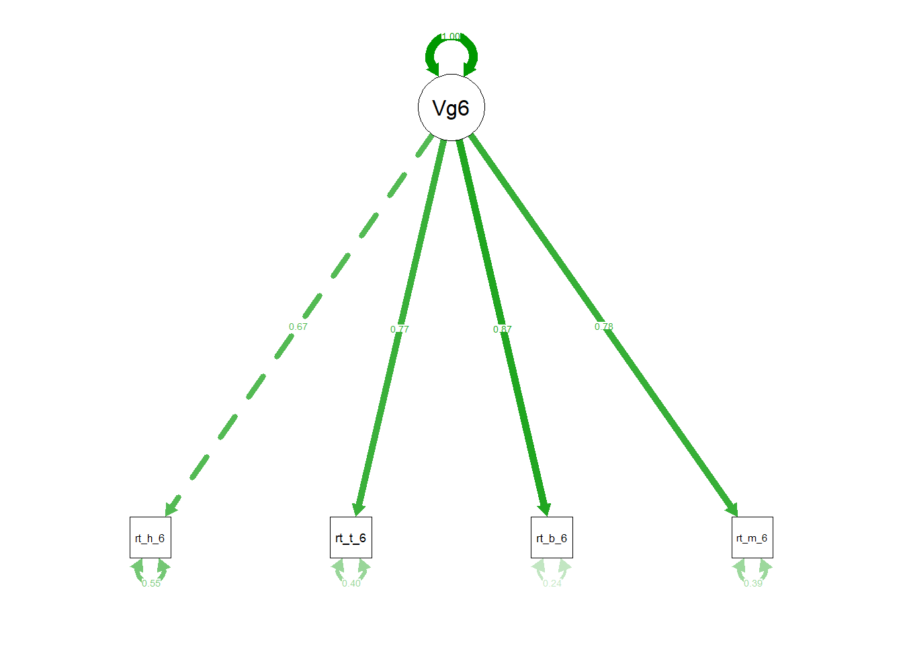
CFA first 6 Modification Indices:
lhs op rhs mi epc sepc.lv sepc.all sepc.nox
13 rat_trust_v6 ~~ rat_buy_v6 13.855 0.739 0.739 0.558 0.558
12 rat_helpful_v6 ~~ rat_emotion_v6 13.855 0.340 0.340 0.295 0.295
15 rat_buy_v6 ~~ rat_emotion_v6 5.549 -0.385 -0.385 -0.367 -0.367
10 rat_helpful_v6 ~~ rat_trust_v6 5.549 -0.267 -0.267 -0.183 -0.183
11 rat_helpful_v6 ~~ rat_buy_v6 1.763 -0.177 -0.177 -0.142 -0.142
14 rat_trust_v6 ~~ rat_emotion_v6 1.763 -0.166 -0.166 -0.135 -0.135
CFA Mplus summary and fit statistics:
CFA for scale Vignette6Estimated using MLR
Number of obs: 298, number of (free) parameters: 12
Model: Chi2(df = 2) = 11.035, p = 0.004
Baseline model: Chi2(df = 6) = 349.329, p = 0
Fit Indices:
CFI = 0.974, TLI = 0.921, SRMR = 0.025
RMSEA = 0.123, 90% CI [0.059, 0.198], p < .05 = 0.032
AIC = 4282.683, BIC = 4327.048
NULL
MC Donalds Omega: 0.87 [ 0.84 , 0.89 ]5.3.3 CFA first order
model <- '
# Measurement model
Vignette1 =~ rat_helpful_v1 + rat_trust_v1 + rat_buy_v1 + rat_emotion_v1
Vignette2 =~ rat_helpful_v2 + rat_trust_v2 + rat_buy_v2 + rat_emotion_v2
Vignette3 =~ rat_helpful_v3 + rat_trust_v3 + rat_buy_v3 + rat_emotion_v3
Vignette4 =~ rat_helpful_v4 + rat_trust_v4 + rat_buy_v4 + rat_emotion_v4
Vignette5 =~ rat_helpful_v5 + rat_trust_v5 + rat_buy_v5 + rat_emotion_v5
Vignette6 =~ rat_helpful_v6 + rat_trust_v6 + rat_buy_v6 + rat_emotion_v6
'
# Fit the SEM model
fit <- sem(model, data = questionnaire_rating_wide, meanstructure = FALSE, std.lv = TRUE)
# Print summary with standardized estimates
summary(fit, standardized = TRUE, fit.measures = TRUE)lavaan 0.6.17 ended normally after 33 iterations
Estimator ML
Optimization method NLMINB
Number of model parameters 63
Number of observations 298
Model Test User Model:
Test statistic 1805.323
Degrees of freedom 237
P-value (Chi-square) 0.000
Model Test Baseline Model:
Test statistic 6604.840
Degrees of freedom 276
P-value 0.000
User Model versus Baseline Model:
Comparative Fit Index (CFI) 0.752
Tucker-Lewis Index (TLI) 0.711
Loglikelihood and Information Criteria:
Loglikelihood user model (H0) -12234.572
Loglikelihood unrestricted model (H1) -11331.910
Akaike (AIC) 24595.144
Bayesian (BIC) 24828.061
Sample-size adjusted Bayesian (SABIC) 24628.265
Root Mean Square Error of Approximation:
RMSEA 0.149
90 Percent confidence interval - lower 0.143
90 Percent confidence interval - upper 0.155
P-value H_0: RMSEA <= 0.050 0.000
P-value H_0: RMSEA >= 0.080 1.000
Standardized Root Mean Square Residual:
SRMR 0.067
Parameter Estimates:
Standard errors Standard
Information Expected
Information saturated (h1) model Structured
Latent Variables:
Estimate Std.Err z-value P(>|z|) Std.lv Std.all
Vignette1 =~
rat_helpful_v1 1.652 0.088 18.725 0.000 1.652 0.886
rat_trust_v1 1.439 0.101 14.269 0.000 1.439 0.736
rat_buy_v1 1.231 0.071 17.233 0.000 1.231 0.839
rat_emotion_v1 1.262 0.081 15.634 0.000 1.262 0.785
Vignette2 =~
rat_helpful_v2 1.697 0.100 16.923 0.000 1.697 0.825
rat_trust_v2 1.601 0.097 16.571 0.000 1.601 0.814
rat_buy_v2 1.861 0.100 18.554 0.000 1.861 0.876
rat_emotion_v2 1.439 0.085 16.989 0.000 1.439 0.827
Vignette3 =~
rat_helpful_v3 1.708 0.098 17.355 0.000 1.708 0.833
rat_trust_v3 1.760 0.096 18.279 0.000 1.760 0.861
rat_buy_v3 2.027 0.100 20.260 0.000 2.027 0.916
rat_emotion_v3 1.338 0.083 16.091 0.000 1.338 0.792
Vignette4 =~
rat_helpful_v4 1.237 0.087 14.220 0.000 1.237 0.730
rat_trust_v4 1.637 0.095 17.282 0.000 1.637 0.834
rat_buy_v4 2.117 0.107 19.703 0.000 2.117 0.906
rat_emotion_v4 1.326 0.084 15.782 0.000 1.326 0.785
Vignette5 =~
rat_helpful_v5 1.163 0.087 13.429 0.000 1.163 0.699
rat_trust_v5 1.591 0.099 16.034 0.000 1.591 0.793
rat_buy_v5 2.049 0.103 19.832 0.000 2.049 0.909
rat_emotion_v5 1.243 0.081 15.284 0.000 1.243 0.768
Vignette6 =~
rat_helpful_v6 1.070 0.084 12.737 0.000 1.070 0.676
rat_trust_v6 1.531 0.099 15.439 0.000 1.531 0.777
rat_buy_v6 1.907 0.102 18.636 0.000 1.907 0.880
rat_emotion_v6 1.215 0.080 15.121 0.000 1.215 0.766
Covariances:
Estimate Std.Err z-value P(>|z|) Std.lv Std.all
Vignette1 ~~
Vignette2 0.379 0.056 6.772 0.000 0.379 0.379
Vignette3 0.386 0.055 7.017 0.000 0.386 0.386
Vignette4 0.188 0.062 3.024 0.002 0.188 0.188
Vignette5 0.157 0.063 2.491 0.013 0.157 0.157
Vignette6 0.110 0.065 1.699 0.089 0.110 0.110
Vignette2 ~~
Vignette3 0.398 0.054 7.337 0.000 0.398 0.398
Vignette4 0.493 0.050 9.867 0.000 0.493 0.493
Vignette5 0.402 0.055 7.310 0.000 0.402 0.402
Vignette6 0.396 0.056 7.072 0.000 0.396 0.396
Vignette3 ~~
Vignette4 0.678 0.037 18.334 0.000 0.678 0.678
Vignette5 0.636 0.040 15.713 0.000 0.636 0.636
Vignette6 0.636 0.041 15.413 0.000 0.636 0.636
Vignette4 ~~
Vignette5 0.730 0.034 21.511 0.000 0.730 0.730
Vignette6 0.679 0.039 17.532 0.000 0.679 0.679
Vignette5 ~~
Vignette6 0.847 0.025 33.883 0.000 0.847 0.847
Variances:
Estimate Std.Err z-value P(>|z|) Std.lv Std.all
.rat_helpful_v1 0.749 0.106 7.043 0.000 0.749 0.215
.rat_trust_v1 1.749 0.166 10.564 0.000 1.749 0.458
.rat_buy_v1 0.637 0.073 8.762 0.000 0.637 0.296
.rat_emotion_v1 0.989 0.100 9.941 0.000 0.989 0.383
.rat_helpful_v2 1.350 0.142 9.491 0.000 1.350 0.319
.rat_trust_v2 1.307 0.134 9.720 0.000 1.307 0.338
.rat_buy_v2 1.054 0.132 8.016 0.000 1.054 0.233
.rat_emotion_v2 0.955 0.101 9.445 0.000 0.955 0.316
.rat_helpful_v3 1.290 0.129 10.034 0.000 1.290 0.307
.rat_trust_v3 1.085 0.115 9.425 0.000 1.085 0.259
.rat_buy_v3 0.787 0.109 7.199 0.000 0.787 0.161
.rat_emotion_v3 1.064 0.100 10.608 0.000 1.064 0.373
.rat_helpful_v4 1.343 0.123 10.930 0.000 1.343 0.468
.rat_trust_v4 1.171 0.123 9.556 0.000 1.171 0.304
.rat_buy_v4 0.981 0.140 7.015 0.000 0.981 0.180
.rat_emotion_v4 1.094 0.105 10.381 0.000 1.094 0.384
.rat_helpful_v5 1.412 0.127 11.147 0.000 1.412 0.511
.rat_trust_v5 1.490 0.145 10.284 0.000 1.490 0.370
.rat_buy_v5 0.878 0.129 6.813 0.000 0.878 0.173
.rat_emotion_v5 1.076 0.102 10.595 0.000 1.076 0.410
.rat_helpful_v6 1.363 0.123 11.105 0.000 1.363 0.543
.rat_trust_v6 1.536 0.151 10.173 0.000 1.536 0.396
.rat_buy_v6 1.058 0.139 7.583 0.000 1.058 0.225
.rat_emotion_v6 1.040 0.101 10.318 0.000 1.040 0.413
Vignette1 1.000 1.000 1.000
Vignette2 1.000 1.000 1.000
Vignette3 1.000 1.000 1.000
Vignette4 1.000 1.000 1.000
Vignette5 1.000 1.000 1.000
Vignette6 1.000 1.000 1.000head(modificationindices(fit, sort=T)) lhs op rhs mi epc sepc.lv sepc.all sepc.nox
454 rat_buy_v5 ~~ rat_buy_v6 101.130 0.937 0.937 0.972 0.972
424 rat_buy_v4 ~~ rat_buy_v5 93.865 0.867 0.867 0.934 0.934
441 rat_helpful_v5 ~~ rat_helpful_v6 92.312 0.841 0.841 0.606 0.606
448 rat_trust_v5 ~~ rat_trust_v6 87.560 0.965 0.965 0.638 0.638
414 rat_trust_v4 ~~ rat_trust_v5 84.908 0.846 0.846 0.640 0.640
428 rat_buy_v4 ~~ rat_buy_v6 82.525 0.843 0.843 0.827 0.827# Plot the SEM model
semPaths(fit,
what = "std", # show standardized estimates
layout = "tree", # neat tree layout
edge.label.cex = 0.8, # size of edge labels
sizeMan = 5, # manifest variable size
sizeLat = 6, # latent variable size
fade = FALSE, # keep all paths visible
nCharNodes = 0, # do not truncate labels
rotation = 1) # vertical tree layout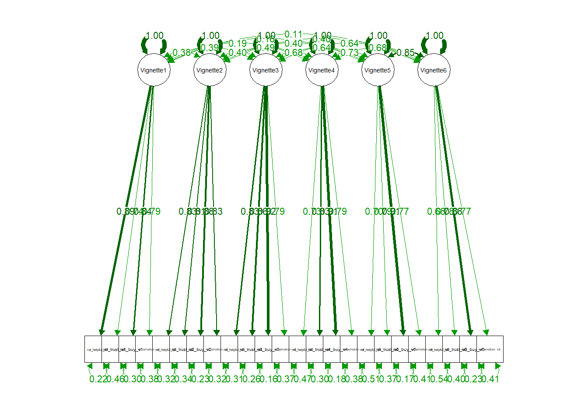
# Extract standardized latent variable correlations
latent_cor <- lavInspect(fit, "cor.lv")
print(latent_cor) Vgntt1 Vgntt2 Vgntt3 Vgntt4 Vgntt5 Vgntt6
Vignette1 1.000
Vignette2 0.379 1.000
Vignette3 0.386 0.398 1.000
Vignette4 0.188 0.493 0.678 1.000
Vignette5 0.157 0.402 0.636 0.730 1.000
Vignette6 0.110 0.396 0.636 0.679 0.847 1.000corPlot(latent_cor,
numbers = TRUE,
main = "Latent Correlations",
zlim = c(-1, 1),
cex = 1)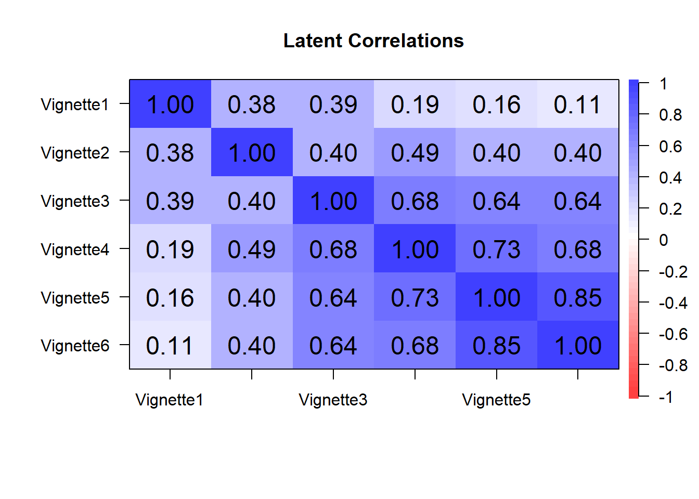
cor.plot(r = (cor(questionnaire_rating_wide[,sort(str_subset(string = colnames(questionnaire_rating_wide), pattern = "^rat_mean"))])),
numbers = TRUE,
main = "Manifest Correlations",
zlim = c(-1, 1),
cex = 1)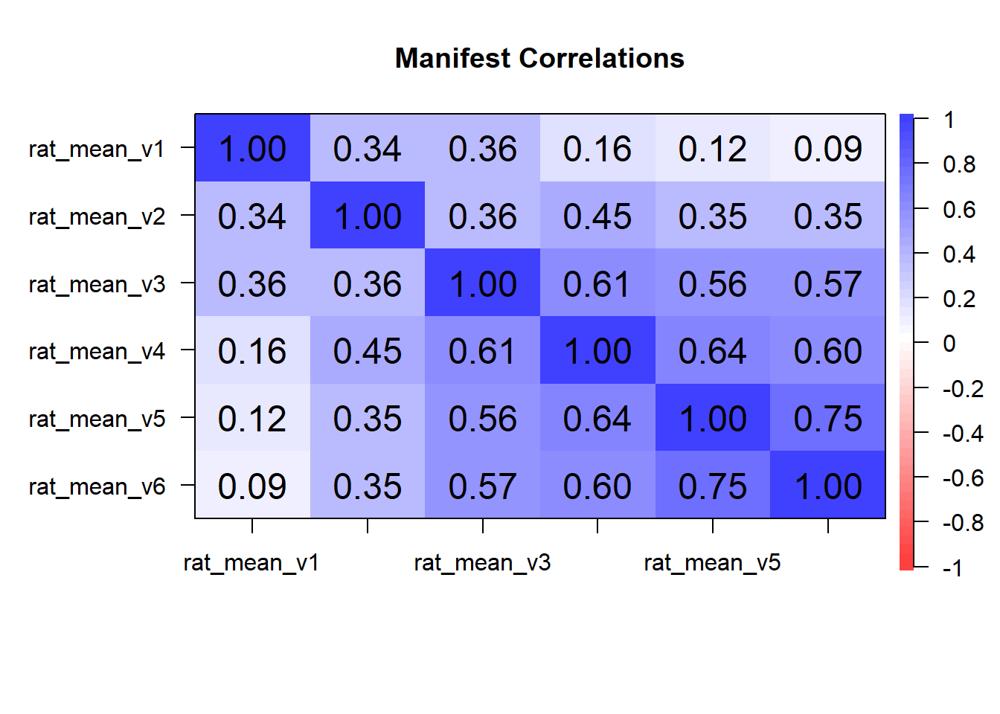
5.4 latent class analysis for “B: Grid (Hierarchy-Egalitarianism)”
over complete data set:
setwd("outputs/LCA")
if(runMplusLCA){
LCA_dat <- questionnaire_rating_wide[, c("ID",
str_subset(string = colnames(questionnaire_rating_wide), pattern = "^rat_mean"))]
tmp <- str_subset(string = colnames(LCA_dat), pattern = "^rat_mean_")
tmp <- str_remove_all(string = tmp, pattern = "^rat_mean_")
# cat(sort(tmp))
# cat(paste0(sort(tmp), "(", 1:length(tmp), ")"))
colnames(LCA_dat) <- c("ID", tmp)
# prepareMplusData(df = LCA_dat, filename = "LCA_dat.dat")
l = 1
list_lca <- list()
for(i in 2:LCArunsDef){
print(i)
numClasses <- i
LCA_mplus <- mplusObject(
TITLE = paste0("Latent Class Analysis Mean Rating Vignettes", " c=", numClasses),
VARIABLE =paste0("
usevariables = v1 v2 v3 v4 v5 v6;
classes = c(", numClasses, ")"),
ANALYSIS =
"
Type=mixture; ! LCA analysis
STARTS= 500 100;
!LRTstarts=0 0 300 20;
",
PLOT =
"
type = plot3;
series is v1(1) v2(2) v3(3) v4(4) v5(5) v6(6);
",
SAVEDATA = paste0("file = lca_", numClasses, ".txt ;
save = cprob;
format = free;
"),
OUTPUT = "tech11 tech14;", rdata = LCA_dat)
list_lca[[l]] <- mplusModeler(LCA_mplus,
modelout = paste0("list_lca", numClasses, ".inp"),
run = 1L)
l = l + 1
}
# comment out to avoid overwriting LCA outputs
saveRDS(list_lca, file="list_lca.rds")
}else{
list_lca <- readRDS("list_lca.rds" )
}get fit statistics LCA:
getLCAfitstatistics(listMplusOutput = list_lca)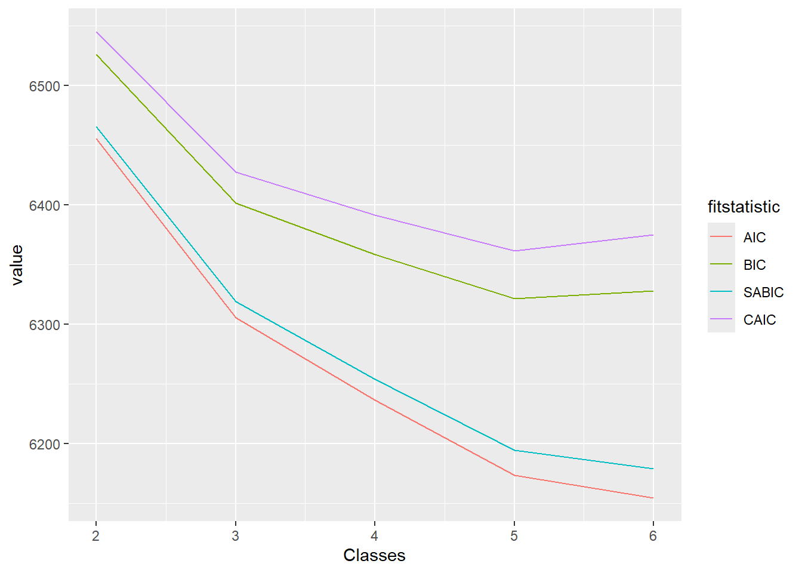
Classes LL AIC BIC SABIC CAIC BLRTp VLMRLRTp Entropy
1 2 -3208.765 6455.530 6525.774 6465.518 6544.775 0 0.0233 0.794
2 3 -3126.535 6305.070 6401.195 6318.739 6427.194 0 0.0202 0.812
3 4 -3085.224 6236.448 6358.453 6253.798 6391.452 0 0.1708 0.837
4 5 -3046.620 6173.240 6321.124 6194.269 6361.124 0 0.0919 0.829
5 6 -3030.044 6154.087 6327.850 6178.796 6374.851 0 0.1949 0.832get profile plot:
### number of classes
num_classes <- 3 # index - 1
# Step 1: Extract means
params <- list_lca[[num_classes]]$results$parameters$unstandardized
means_df <- params %>%
filter(paramHeader == "Means" & !grepl("^C#\\d$", param))
# Step 2: Get class proportions
class_counts <- table(list_lca[[num_classes]]$results$savedata$C)
total_n <- sum(class_counts)
class_props <- round(100 * class_counts / total_n, 1)
# Create descriptive labels
class_labels <- paste0("Class ", names(class_counts), " (", class_props, "%)")
# Map class numbers to labels
class_label_map <- setNames(class_labels, paste0("Class ", names(class_counts)))
# Step 3: Prepare data for plotting
means_long <- means_df %>%
mutate(Indicator = param,
Class = paste0("Class ", LatentClass)) %>%
select(Indicator, Class, est) %>%
pivot_wider(names_from = Class, values_from = est) %>%
pivot_longer(cols = starts_with("Class"), names_to = "Class", values_to = "Mean")
# Apply the new labels
means_long$Class <- class_label_map[means_long$Class]
# Optional: Set indicator order
# means_long$Indicator <- factor(means_long$Indicator,
# levels = paste0("Vignette", 1:6))
# Step 4: Plot
ggplot(means_long, aes(x = Indicator, y = Mean, group = Class, color = Class)) +
geom_line(size = 1) +
geom_point(size = 2) +
theme_minimal() +
labs(title = "Latent Profiles",
x = "Vignettes",
y = "Estimated Means") +
theme(text = element_text(size = 14),
axis.text.x = element_text(angle = 45, hjust = 1),
legend.title = element_blank())Warning: Using `size` aesthetic for lines was deprecated in ggplot2 3.4.0.
ℹ Please use `linewidth` instead.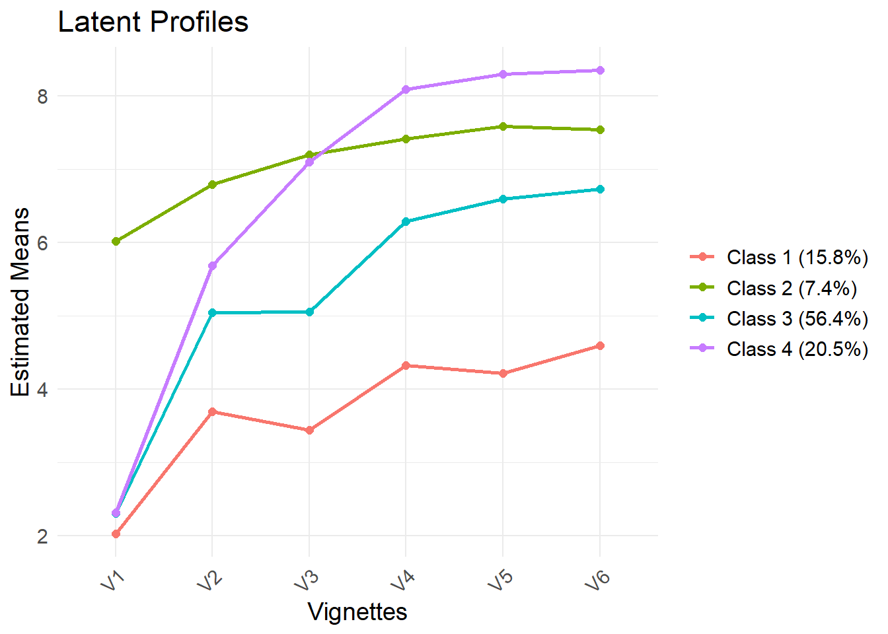
class_counts
1 2 3 4
47 22 168 61 questionnaire_rating_wide$classAssignment <- list_lca[[num_classes]]$results$savedata$C
boxplot(questionnaire_rating_wide$rat_mean_v1 ~ questionnaire_rating_wide$classAssignment)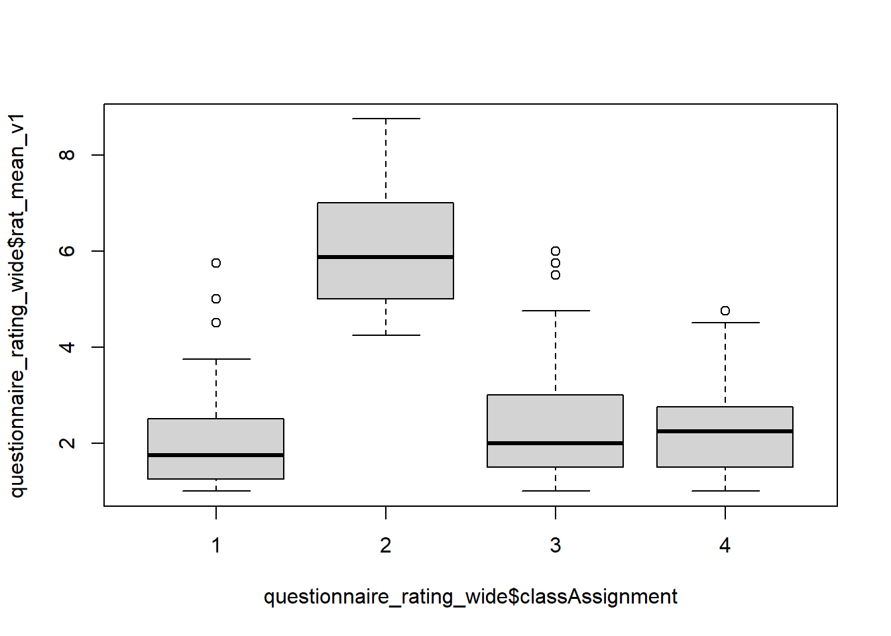
boxplot(questionnaire_rating_wide$rat_mean_v6 ~ questionnaire_rating_wide$classAssignment)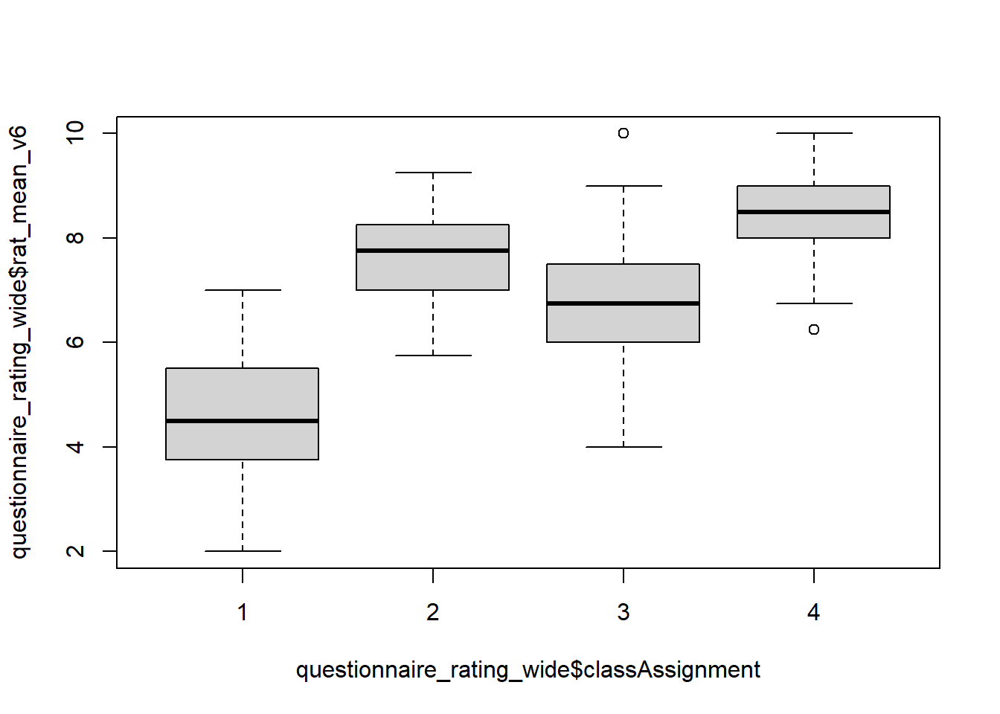
boxplot(questionnaire_rating_wide$mean_ATI ~ questionnaire_rating_wide$classAssignment)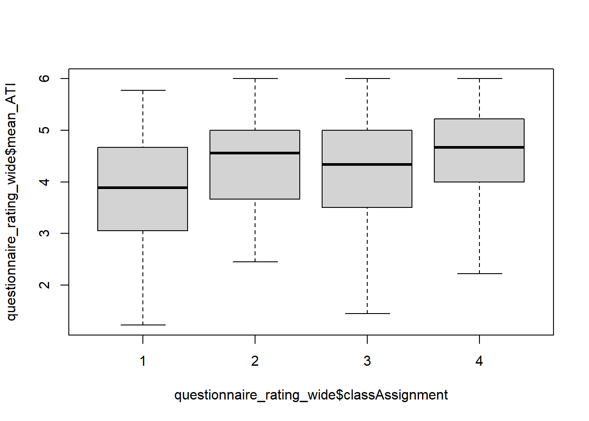
summary(aov(questionnaire_rating_wide$mean_ATI ~ questionnaire_rating_wide$classAssignment)) Df Sum Sq Mean Sq F value Pr(>F)
questionnaire_rating_wide$classAssignment 1 10.43 10.433 10.13 0.00161 **
Residuals 296 304.70 1.029
---
Signif. codes: 0 '***' 0.001 '**' 0.01 '*' 0.05 '.' 0.1 ' ' 1summary_stats <- questionnaire_rating_wide %>%
group_by(classAssignment) %>%
summarise(
N = n(),
across(
.cols = starts_with("mean_ATI"),
.fns = list(mean = ~ mean(as.numeric(.), na.rm = TRUE),
sd = ~ sd(as.numeric(.), na.rm = TRUE)),
.names = "{.col}_{.fn}"
)
)
summary_stats# A tibble: 4 × 4
classAssignment N mean_ATI_mean mean_ATI_sd
<dbl> <int> <dbl> <dbl>
1 1 47 3.83 1.13
2 2 22 4.34 1.09
3 3 168 4.22 0.991
4 4 61 4.51 0.951questionnaire_rating_long$classAssignment <- NA
for(i in 1:length(unique(questionnaire_rating_long$PROLIFIC_PID))){
questionnaire_rating_long$classAssignment[questionnaire_rating_long$PROLIFIC_PID %in% unique(questionnaire_rating_long$PROLIFIC_PID)[i]] <- list_lca[[num_classes]]$results$savedata$C[i]
}summary_stats <- questionnaire_rating_long %>%
group_by(Vignette, classAssignment) %>%
summarise(
N = n(),
across(
.cols = starts_with("rat_mean"),
.fns = list(mean = ~ mean(as.numeric(.), na.rm = FALSE),
sd = ~ sd(as.numeric(.), na.rm = FALSE)),
.names = "{.col}_{.fn}"
)
)`summarise()` has grouped output by 'Vignette'. You can override using the
`.groups` argument.summary_stats# A tibble: 24 × 5
# Groups: Vignette [6]
Vignette classAssignment N rat_mean_mean rat_mean_sd
<fct> <dbl> <int> <dbl> <dbl>
1 1 1 47 2.04 1.05
2 1 2 22 6.09 1.29
3 1 3 168 2.33 1.13
4 1 4 61 2.26 0.983
5 2 1 47 3.64 1.45
6 2 2 22 6.85 1.16
7 2 3 168 5.09 1.60
8 2 4 61 5.60 1.65
9 3 1 47 3.41 1.19
10 3 2 22 7.38 0.719
# ℹ 14 more rows# Pivot longer for ggplot
summary_long <- summary_stats %>%
pivot_longer(
cols = -c(Vignette, N),
names_to = c("Rating", ".value"),
names_pattern = "(rat_.*)_(mean|sd)"
)
ggplot(summary_long, aes(x = Vignette, y = mean, fill = Rating)) +
geom_col(position = position_dodge(width = 0.9), width = 0.7) +
geom_errorbar(
aes(ymin = mean - sd, ymax = mean + sd),
position = position_dodge(width = 0.9),
width = 0.2
) +
facet_wrap(~ Rating, scales = "free_y") +
labs(
title = "Mean Ratings per Vignette",
y = "Mean Rating ± SD",
x = "Vignette"
) +
theme_minimal() +
theme(legend.position = "none")Warning: Removed 24 rows containing missing values or values outside the scale range
(`geom_col()`).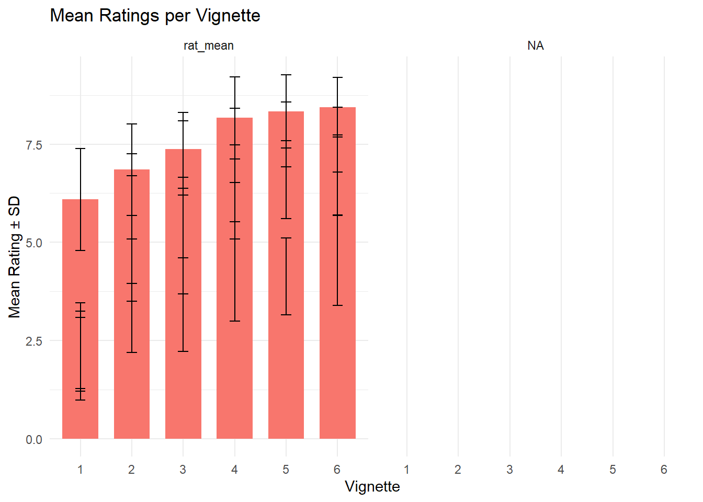
# library(ggstatsplot)
#
# One plot for a single rating variable (within-subjects design)
# ggwithinstats(
# data = questionnaire_rating_long,
# x = Vignette,
# y = rat_mean,
# id = PROLIFIC_PID, # Participant ID for within-subjects
# type = "parametric", # or "nonparametric" based on assumption checks
# title = "Within-Subjects Comparison of Mean Ratings Across Vignettes",
# xlab = "Vignette",
# ylab = "Mean Ratings",
# messages = FALSE
# )library(afex)Warning: Paket 'afex' wurde unter R Version 4.3.3 erstelltLade nötiges Paket: lme4Lade nötiges Paket: MatrixWarning: Paket 'Matrix' wurde unter R Version 4.3.3 erstellt
Attache Paket: 'Matrix'Die folgenden Objekte sind maskiert von 'package:tidyr':
expand, pack, unpack************
Welcome to afex. For support visit: http://afex.singmann.science/- Functions for ANOVAs: aov_car(), aov_ez(), and aov_4()
- Methods for calculating p-values with mixed(): 'S', 'KR', 'LRT', and 'PB'
- 'afex_aov' and 'mixed' objects can be passed to emmeans() for follow-up tests
- Get and set global package options with: afex_options()
- Set sum-to-zero contrasts globally: set_sum_contrasts()
- For example analyses see: browseVignettes("afex")
************
Attache Paket: 'afex'Das folgende Objekt ist maskiert 'package:lme4':
lmer# Run repeated measures ANOVA (within-subjects)
anova_result <- aov_ez(
id = "PROLIFIC_PID",
dv = "rat_mean",
data = questionnaire_rating_long,
within = "Vignette", # <- not between
type = 3
)
summary(anova_result)
Univariate Type III Repeated-Measures ANOVA Assuming Sphericity
Sum Sq num Df Error SS den Df F value Pr(>F)
(Intercept) 53832 1 2507.2 297 6376.75 < 2.2e-16 ***
Vignette 3798 5 2306.6 1485 489.04 < 2.2e-16 ***
---
Signif. codes: 0 '***' 0.001 '**' 0.01 '*' 0.05 '.' 0.1 ' ' 1
Mauchly Tests for Sphericity
Test statistic p-value
Vignette 0.49412 1.2623e-36
Greenhouse-Geisser and Huynh-Feldt Corrections
for Departure from Sphericity
GG eps Pr(>F[GG])
Vignette 0.78171 < 2.2e-16 ***
---
Signif. codes: 0 '***' 0.001 '**' 0.01 '*' 0.05 '.' 0.1 ' ' 1
HF eps Pr(>F[HF])
Vignette 0.7934355 3.221498e-247library(emmeans)Warning: Paket 'emmeans' wurde unter R Version 4.3.3 erstellt# Get estimated marginal means and post hoc comparisons
emmeans_result <- emmeans(anova_result, pairwise ~ Vignette)
emmeans_result$contrasts contrast estimate SE df t.ratio p.value
X1 - X2 -2.549 0.1077 297 -23.669 <.0001
X1 - X3 -2.851 0.1085 297 -26.281 <.0001
X1 - X4 -3.889 0.1187 297 -32.753 <.0001
X1 - X5 -4.099 0.1190 297 -34.433 <.0001
X1 - X6 -4.242 0.1183 297 -35.865 <.0001
X2 - X3 -0.302 0.1156 297 -2.613 0.0972
X2 - X4 -1.341 0.1042 297 -12.872 <.0001
X2 - X5 -1.550 0.1107 297 -14.007 <.0001
X2 - X6 -1.694 0.1087 297 -15.580 <.0001
X3 - X4 -1.039 0.0892 297 -11.642 <.0001
X3 - X5 -1.248 0.0924 297 -13.514 <.0001
X3 - X6 -1.392 0.0906 297 -15.357 <.0001
X4 - X5 -0.210 0.0812 297 -2.584 0.1045
X4 - X6 -0.353 0.0834 297 -4.237 0.0004
X5 - X6 -0.143 0.0651 297 -2.205 0.2384
P value adjustment: tukey method for comparing a family of 6 estimates setwd("outputs")
library(lme4)
library(performance)Warning: Paket 'performance' wurde unter R Version 4.3.3 erstellt# Fit base model
model_base <- lmer(
rat_mean ~ 1 +
(1 | PROLIFIC_PID),
data = questionnaire_rating_long
)
# ICC calculation
var_comp <- as.data.frame(VarCorr(model_base))
var_participant <- var_comp$vcov[var_comp$grp == "PROLIFIC_PID"]
var_residual <- var_comp$vcov[var_comp$grp == "Residual"]
icc <- var_participant / (var_participant + var_residual)
print(icc)[1] 0.150191# Make sure Vignette is a factor
questionnaire_rating_long$Vignette_ref <- factor(questionnaire_rating_long$Vignette)
# Set level 6 as reference
questionnaire_rating_long$Vignette_ref <- relevel(questionnaire_rating_long$Vignette_ref, ref = "6")
# Fit the model with Vignette as fixed effect and random intercepts per participant
model_vignette <- lmer(
rat_mean ~ Vignette_ref +
(1 | PROLIFIC_PID),
data = questionnaire_rating_long
)
# Use sjPlot instead of stargazer for mixed models
library(sjPlot)Warning: Paket 'sjPlot' wurde unter R Version 4.3.3 erstellttab_model(model_vignette, file = "lmm_vignette.html")| rat mean | |||
|---|---|---|---|
| Predictors | Estimates | CI | p |
| (Intercept) | 6.79 | 6.60 – 6.98 | <0.001 |
| Vignette ref [1] | -4.24 | -4.44 – -4.04 | <0.001 |
| Vignette ref [2] | -1.69 | -1.89 – -1.49 | <0.001 |
| Vignette ref [3] | -1.39 | -1.59 – -1.19 | <0.001 |
| Vignette ref [4] | -0.35 | -0.55 – -0.15 | 0.001 |
| Vignette ref [5] | -0.14 | -0.34 – 0.06 | 0.160 |
| Random Effects | |||
| σ2 | 1.55 | ||
| τ00 PROLIFIC_PID | 1.15 | ||
| ICC | 0.43 | ||
| N PROLIFIC_PID | 298 | ||
| Observations | 1788 | ||
| Marginal R2 / Conditional R2 | 0.440 / 0.678 | ||
# Show summary
summary(model_vignette)Linear mixed model fit by REML. t-tests use Satterthwaite's method [
lmerModLmerTest]
Formula: rat_mean ~ Vignette_ref + (1 | PROLIFIC_PID)
Data: questionnaire_rating_long
REML criterion at convergence: 6378.8
Scaled residuals:
Min 1Q Median 3Q Max
-2.6994 -0.6399 0.0112 0.6336 3.5968
Random effects:
Groups Name Variance Std.Dev.
PROLIFIC_PID (Intercept) 1.148 1.071
Residual 1.553 1.246
Number of obs: 1788, groups: PROLIFIC_PID, 298
Fixed effects:
Estimate Std. Error df t value Pr(>|t|)
(Intercept) 6.79111 0.09521 936.35097 71.327 < 2e-16 ***
Vignette_ref1 -4.24245 0.10210 1485.00001 -41.551 < 2e-16 ***
Vignette_ref2 -1.69379 0.10210 1485.00001 -16.589 < 2e-16 ***
Vignette_ref3 -1.39178 0.10210 1485.00001 -13.631 < 2e-16 ***
Vignette_ref4 -0.35319 0.10210 1485.00001 -3.459 0.000557 ***
Vignette_ref5 -0.14346 0.10210 1485.00001 -1.405 0.160221
---
Signif. codes: 0 '***' 0.001 '**' 0.01 '*' 0.05 '.' 0.1 ' ' 1
Correlation of Fixed Effects:
(Intr) Vgnt_1 Vgnt_2 Vgnt_3 Vgnt_4
Vignett_rf1 -0.536
Vignett_rf2 -0.536 0.500
Vignett_rf3 -0.536 0.500 0.500
Vignett_rf4 -0.536 0.500 0.500 0.500
Vignett_rf5 -0.536 0.500 0.500 0.500 0.500# Calculate R-squared
r2_values <- model_performance(model_vignette)
print(r2_values)# Indices of model performance
AIC | AICc | BIC | R2 (cond.) | R2 (marg.) | ICC | RMSE | Sigma
--------------------------------------------------------------------------------
6394.798 | 6394.879 | 6438.709 | 0.678 | 0.440 | 0.425 | 1.157 | 1.2465.5 try dummies:
questionnaire_rating_long$dummyPart1 <- 0
questionnaire_rating_long$dummyPart2 <- 0
questionnaire_rating_long$dummyPart3 <- 0
questionnaire_rating_long$dummyPart4 <- 0
questionnaire_rating_long$dummyPart5 <- 0
questionnaire_rating_long$dummyPart6 <- 0
questionnaire_rating_long$dummyPart1[questionnaire_rating_long$Vignette %in% c(3,4,5)] <- 1
questionnaire_rating_long$dummyPart2[questionnaire_rating_long$Vignette %in% c(5,6)] <- 1
questionnaire_rating_long$dummyPart3[questionnaire_rating_long$Vignette %in% c(1,2)] <- 1
questionnaire_rating_long$dummyPart4[questionnaire_rating_long$Vignette %in% c(6)] <- 1
questionnaire_rating_long$dummyPart5[questionnaire_rating_long$Vignette %in% c(2,4)] <- 1
questionnaire_rating_long$dummyPart6[questionnaire_rating_long$Vignette %in% c(1,2)] <- 1summary_stats <- questionnaire_rating_long %>%
group_by(dummyPart1, dummyPart2, dummyPart3, dummyPart4, dummyPart5, dummyPart6) %>%
summarise(
N = n(),
across(
.cols = starts_with("rat_mean"),
.fns = list(mean = ~ mean(as.numeric(.), na.rm = TRUE),
sd = ~ sd(as.numeric(.), na.rm = TRUE)),
.names = "{.col}_{.fn}"
)
)`summarise()` has grouped output by 'dummyPart1', 'dummyPart2', 'dummyPart3',
'dummyPart4', 'dummyPart5'. You can override using the `.groups` argument.summary_stats# A tibble: 6 × 9
# Groups: dummyPart1, dummyPart2, dummyPart3, dummyPart4, dummyPart5 [6]
dummyPart1 dummyPart2 dummyPart3 dummyPart4 dummyPart5 dummyPart6 N
<dbl> <dbl> <dbl> <dbl> <dbl> <dbl> <int>
1 0 0 1 0 0 1 298
2 0 0 1 0 1 1 298
3 0 1 0 1 0 0 298
4 1 0 0 0 0 0 298
5 1 0 0 0 1 0 298
6 1 1 0 0 0 0 298
# ℹ 2 more variables: rat_mean_mean <dbl>, rat_mean_sd <dbl>dummy_matrix <- questionnaire_rating_long[, c("dummyPart1", "dummyPart2", "dummyPart3",
"dummyPart4", "dummyPart5", "dummyPart6")]
qr(dummy_matrix)$rank # Actual rank[1] 5ncol(dummy_matrix) # Number of columns[1] 6library(caret)Warning: Paket 'caret' wurde unter R Version 4.3.3 erstelltLade nötiges Paket: latticeWarning: Paket 'lattice' wurde unter R Version 4.3.3 erstellt
Attache Paket: 'caret'Das folgende Objekt ist maskiert 'package:purrr':
liftfindLinearCombos(dummy_matrix)$linearCombos
$linearCombos[[1]]
[1] 6 3
$remove
[1] 6library(lme4)
model_base <- lmer(
rat_mean ~ dummyPart1 + dummyPart2 + dummyPart3 + dummyPart4 + dummyPart5 + dummyPart6 +
(1 | PROLIFIC_PID),
data = questionnaire_rating_long
)fixed-effect model matrix is rank deficient so dropping 2 columns / coefficientssummary(model_base)Linear mixed model fit by REML. t-tests use Satterthwaite's method [
lmerModLmerTest]
Formula: rat_mean ~ dummyPart1 + dummyPart2 + dummyPart3 + dummyPart4 +
dummyPart5 + dummyPart6 + (1 | PROLIFIC_PID)
Data: questionnaire_rating_long
REML criterion at convergence: 6482.4
Scaled residuals:
Min 1Q Median 3Q Max
-2.8471 -0.6454 -0.0145 0.6136 3.2803
Random effects:
Groups Name Variance Std.Dev.
PROLIFIC_PID (Intercept) 1.129 1.063
Residual 1.667 1.291
Number of obs: 1788, groups: PROLIFIC_PID, 298
Fixed effects:
Estimate Std. Error df t value Pr(>|t|)
(Intercept) 5.16527 0.13845 1704.92348 37.308 <2e-16 ***
dummyPart1 -0.14346 0.10576 1486.00001 -1.356 0.175
dummyPart2 1.62584 0.09893 1486.00001 16.434 <2e-16 ***
dummyPart3 -2.23909 0.12953 1486.00001 -17.287 <2e-16 ***
dummyPart5 1.79362 0.07478 1486.00001 23.984 <2e-16 ***
---
Signif. codes: 0 '***' 0.001 '**' 0.01 '*' 0.05 '.' 0.1 ' ' 1
Correlation of Fixed Effects:
(Intr) dmmyP1 dmmyP2 dmmyP3
dummyPart1 -0.764
dummyPart2 -0.715 0.535
dummyPart3 -0.780 0.816 0.655
dummyPart5 -0.270 0.000 0.378 0.000
fit warnings:
fixed-effect model matrix is rank deficient so dropping 2 columns / coefficientslibrary(psych)
library(dplyr)
library(ggplot2)
library(cluster)Warning: Paket 'cluster' wurde unter R Version 4.3.2 erstelltlibrary(factoextra) # for fviz_cluster, optional visualizationWarning: Paket 'factoextra' wurde unter R Version 4.3.3 erstelltWelcome! Want to learn more? See two factoextra-related books at https://goo.gl/ve3WBarat_vars <- c("rat_helpful", "rat_trust", "rat_buy", "rat_emotion")
unique_vignettes <- sort(unique(questionnaire_rating_long$Vignette))
for (v in unique_vignettes) {
cat("\n=== Vignette:", v, "===\n")
# Subset and clean data
vignette_data <- questionnaire_rating_long %>%
filter(Vignette == v) %>%
select(all_of(rat_vars)) %>%
na.omit()
# Check if enough data
if (nrow(vignette_data) >= 5) {
# 1. Correlation matrix plot
cat("Correlation matrix:\n")
corPlot(cor(vignette_data), main = paste("Correlation Plot - Vignette", v))
# 2. Parallel analysis (scree plot)
cat("Parallel analysis:\n")
efa_parallel <- fa.parallel(vignette_data, fa = "fa", fm = "ml", main = paste("Parallel Analysis - Vignette", v))
# 3. Optional: Run EFA with 1 factor if unidimensional
efa <- fa(vignette_data, nfactors = efa_parallel$nfact, fm = "ml")
print(efa$loadings)
# 4. K-means clustering (set k = 2 or pick adaptively)
vignette_scaled <- scale(vignette_data)
cat("Selecting optimal number of clusters (k):\n")
# Use elbow method to find optimal k
nb <- fviz_nbclust(
vignette_scaled,
FUNcluster = kmeans,
method = "wss",
k.max = 6,
nstart = 25 # needed by kmeans
)
print(nb)
# Extract optimal k (visually, or use function if needed)
optimal_k <- which.min(diff(diff(nb$data$y))) + 1
cat("Auto-selected k =", optimal_k, "\n")
set.seed(123)
km <- kmeans(vignette_scaled, centers = optimal_k, nstart = 25)
cat("K-means clustering results (k =", optimal_k, "):\n")
print(km$size)
print(km$centers)
# 5. Plot clusters using PCA
fviz_cluster(km, data = vignette_scaled, main = paste("K-Means Clusters - Vignette", v))
} else {
cat("Not enough complete responses for Vignette", v, "\n")
}
}
=== Vignette: 1 ===
Correlation matrix: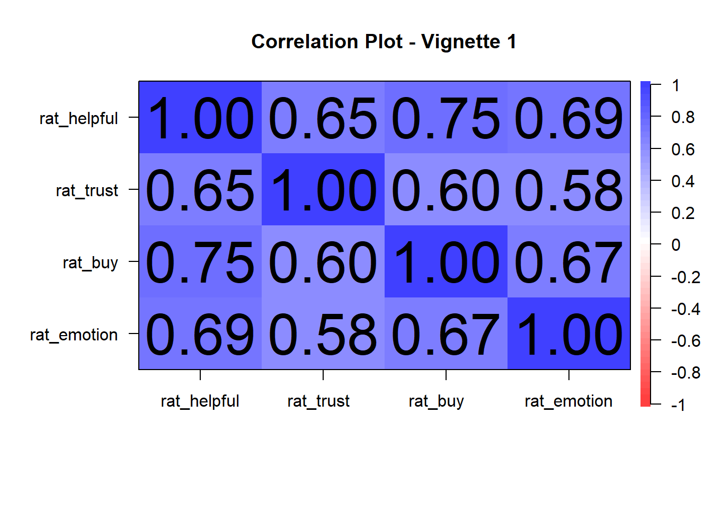
Parallel analysis: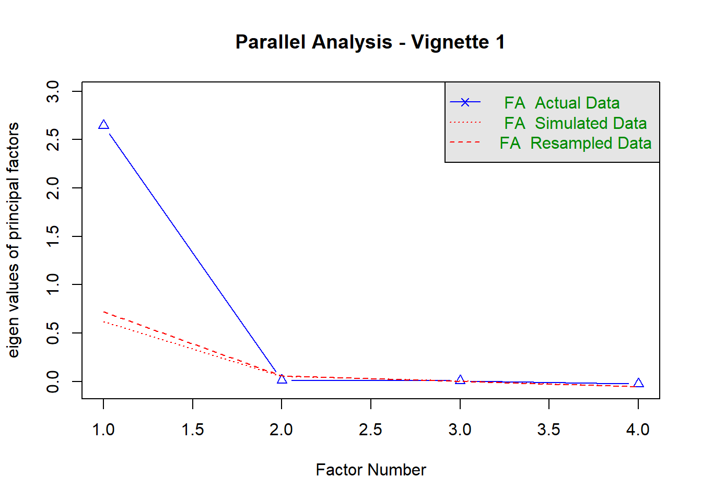
Parallel analysis suggests that the number of factors = 1 and the number of components = NA
Loadings:
ML1
rat_helpful 0.887
rat_trust 0.731
rat_buy 0.840
rat_emotion 0.787
ML1
SS loadings 2.646
Proportion Var 0.662
Selecting optimal number of clusters (k):
Auto-selected k = 4
K-means clustering results (k = 4 ):
[1] 33 168 20 77
rat_helpful rat_trust rat_buy rat_emotion
1 -0.3162157 1.2070636 -0.3325821 -0.4103896
2 -0.5775472 -0.7019918 -0.4743290 -0.4934273
3 2.2537559 1.9050241 2.9446070 2.1980040
4 0.8102329 0.5194941 0.4126018 0.6815399
=== Vignette: 2 ===
Correlation matrix:
Parallel analysis:
Parallel analysis suggests that the number of factors = 1 and the number of components = NA
Loadings:
ML1
rat_helpful 0.847
rat_trust 0.798
rat_buy 0.856
rat_emotion 0.842
ML1
SS loadings 2.798
Proportion Var 0.700
Selecting optimal number of clusters (k):
Auto-selected k = 5
K-means clustering results (k = 5 ):
[1] 94 71 77 37 19
rat_helpful rat_trust rat_buy rat_emotion
1 -0.1288700 -0.04055071 -0.2275087 -0.1074563
2 -0.8179642 -0.82180717 -0.9058465 -0.7689256
3 0.7755470 0.61377222 0.6890013 0.5437081
4 1.2506588 1.27970345 1.5871645 1.5661926
5 -1.8843295 -1.70786382 -1.3724878 -1.8484232
=== Vignette: 3 ===
Correlation matrix:
Parallel analysis:
Parallel analysis suggests that the number of factors = 1 and the number of components = NA
Loadings:
ML1
rat_helpful 0.843
rat_trust 0.855
rat_buy 0.912
rat_emotion 0.796
ML1
SS loadings 2.905
Proportion Var 0.726
Selecting optimal number of clusters (k):
Auto-selected k = 5
K-means clustering results (k = 5 ):
[1] 51 25 94 70 58
rat_helpful rat_trust rat_buy rat_emotion
1 0.07103493 -0.4525166 -0.6700929 -0.4503689
2 -1.73658313 -1.7387893 -1.4463072 -1.6199707
3 0.29115423 0.4159067 0.4081185 0.1917249
4 1.05174067 1.0525478 1.2163636 1.2092368
5 -1.05514738 -0.7969914 -0.9168306 -0.6758731
=== Vignette: 4 ===
Correlation matrix:
Parallel analysis:
Parallel analysis suggests that the number of factors = 2 and the number of components = NA Lade nötigen Namensraum: GPArotation
Loadings:
ML1 ML2
rat_helpful 0.861
rat_trust 0.919
rat_buy 0.698 0.221
rat_emotion 0.136 0.735
ML1 ML2
SS loadings 1.352 1.334
Proportion Var 0.338 0.334
Cumulative Var 0.338 0.672
Selecting optimal number of clusters (k):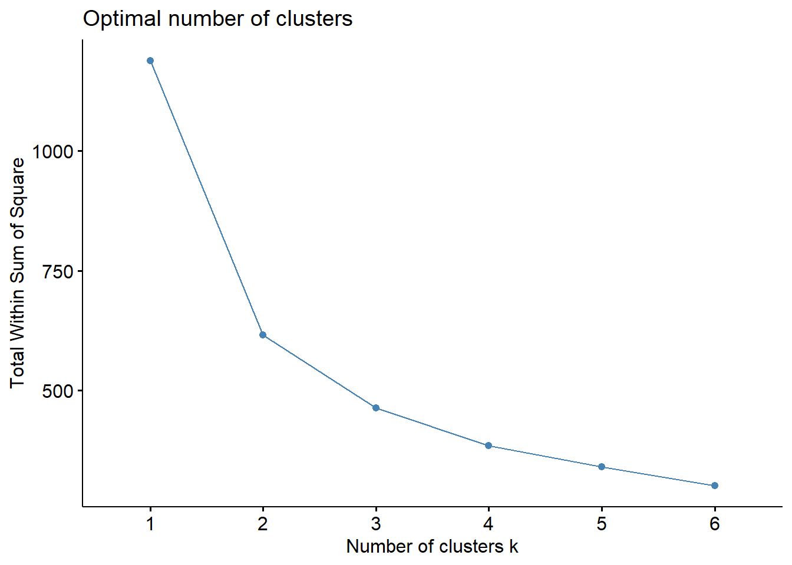
Auto-selected k = 5
K-means clustering results (k = 5 ):
[1] 25 52 22 91 108
rat_helpful rat_trust rat_buy rat_emotion
1 -2.13244512 -1.5395768 -1.5462851 -1.5876052
2 1.05239238 1.2023347 1.2970126 1.2645647
3 0.08337697 -1.6172807 -1.4344576 -0.8017607
4 -0.46710969 -0.1926062 -0.4936013 -0.5498382
5 0.36351308 0.2692163 0.4415579 0.3852480
=== Vignette: 5 ===
Correlation matrix:
Parallel analysis:
Parallel analysis suggests that the number of factors = 2 and the number of components = NA
Loadings:
ML1 ML2
rat_helpful 0.842
rat_trust 0.895
rat_buy 0.606 0.312
rat_emotion 0.261 0.589
ML1 ML2
SS loadings 1.237 1.155
Proportion Var 0.309 0.289
Cumulative Var 0.309 0.598
Selecting optimal number of clusters (k):
Auto-selected k = 5
K-means clustering results (k = 5 ):
[1] 38 104 36 38 82
rat_helpful rat_trust rat_buy rat_emotion
1 0.3087827 -1.31713582 -0.7722250 -0.4090994
2 0.4698177 0.45957839 0.5551389 0.5862173
3 1.1022769 1.33546600 1.3216167 1.3305381
4 -1.8399715 -1.27783801 -1.5418673 -1.4312492
5 -0.3702175 0.03336679 -0.2119163 -0.4747893
=== Vignette: 6 ===
Correlation matrix: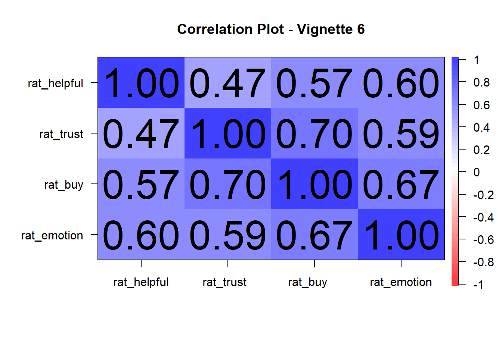
Parallel analysis:Parallel analysis suggests that the number of factors = 1 and the number of components = NA
Loadings:
ML1
rat_helpful 0.674
rat_trust 0.774
rat_buy 0.871
rat_emotion 0.783
ML1
SS loadings 2.425
Proportion Var 0.606
Selecting optimal number of clusters (k):
Auto-selected k = 4
K-means clustering results (k = 4 ):
[1] 99 52 98 49
rat_helpful rat_trust rat_buy rat_emotion
1 -0.3590060 -0.0456474 -0.1613875 -0.3769835
2 -1.3002783 -1.2972064 -1.5132992 -1.3242317
3 0.5945497 0.9740523 0.9088772 0.8143747
4 0.9161263 -0.4792509 0.1142644 0.5382183library(psych)
library(dplyr)
library(ggplot2)
library(cluster)
library(factoextra)
rat_vars <- c("rat_helpful", "rat_trust", "rat_buy", "rat_emotion")
unique_vignettes <- sort(unique(questionnaire_rating_long$Vignette))
# === NEW: list to store assignments ===
cluster_assignments <- list()
for (v in unique_vignettes) {
cat("\n=== Vignette:", v, "===\n")
# Subset and clean data
vignette_subset <- questionnaire_rating_long %>%
filter(Vignette == v) %>%
select(PROLIFIC_PID, all_of(rat_vars)) %>%
na.omit()
# Keep PID separate and scale only the rating data
pids <- vignette_subset$PROLIFIC_PID
vignette_data <- vignette_subset %>% select(-PROLIFIC_PID)
if (nrow(vignette_data) >= 5) {
# 1. Correlation matrix plot
cat("Correlation matrix:\n")
corPlot(cor(vignette_data), main = paste("Correlation Plot - Vignette", v))
# 2. Parallel analysis
cat("Parallel analysis:\n")
efa_parallel <- fa.parallel(vignette_data, fa = "fa", fm = "ml", main = paste("Parallel Analysis - Vignette", v))
# 3. Run EFA
efa <- fa(vignette_data, nfactors = efa_parallel$nfact, fm = "ml")
print(efa$loadings)
# 4. K-means clustering
vignette_scaled <- scale(vignette_data)
cat("Selecting optimal number of clusters (k):\n")
nb <- fviz_nbclust(
vignette_scaled,
FUNcluster = kmeans,
method = "wss",
k.max = 6,
nstart = 25
)
print(nb)
optimal_k <- which.min(diff(diff(nb$data$y))) + 1
cat("Auto-selected k =", optimal_k, "\n")
set.seed(123)
km <- kmeans(vignette_scaled, centers = optimal_k, nstart = 25)
cat("K-means clustering results (k =", optimal_k, "):\n")
print(km$size)
# 5. Plot clusters
fviz_cluster(km, data = vignette_scaled, main = paste("K-Means Clusters - Vignette", v))
# === NEW: store cluster assignments ===
cluster_assignments[[as.character(v)]] <- data.frame(
PROLIFIC_PID = pids,
Vignette = v,
Cluster = km$cluster
)
} else {
cat("Not enough complete responses for Vignette", v, "\n")
}
}
=== Vignette: 1 ===
Correlation matrix:
Parallel analysis:Parallel analysis suggests that the number of factors = 1 and the number of components = NA
Loadings:
ML1
rat_helpful 0.887
rat_trust 0.731
rat_buy 0.840
rat_emotion 0.787
ML1
SS loadings 2.646
Proportion Var 0.662
Selecting optimal number of clusters (k):Auto-selected k = 4
K-means clustering results (k = 4 ):
[1] 33 168 20 77
=== Vignette: 2 ===
Correlation matrix: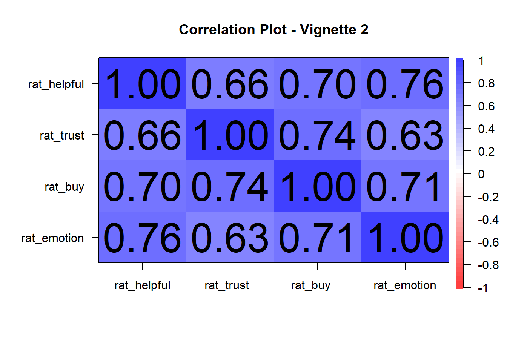
Parallel analysis:Parallel analysis suggests that the number of factors = 1 and the number of components = NA
Loadings:
ML1
rat_helpful 0.847
rat_trust 0.798
rat_buy 0.856
rat_emotion 0.842
ML1
SS loadings 2.798
Proportion Var 0.700
Selecting optimal number of clusters (k):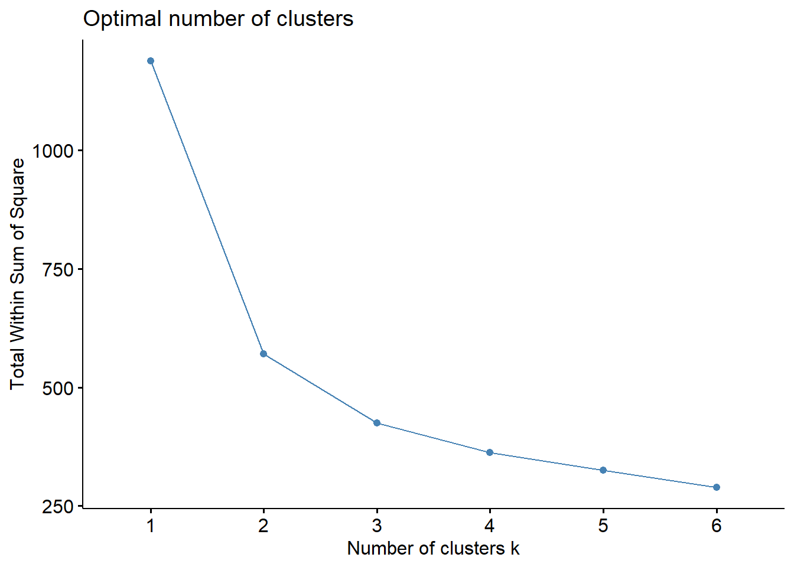
Auto-selected k = 5
K-means clustering results (k = 5 ):
[1] 94 71 77 37 19
=== Vignette: 3 ===
Correlation matrix: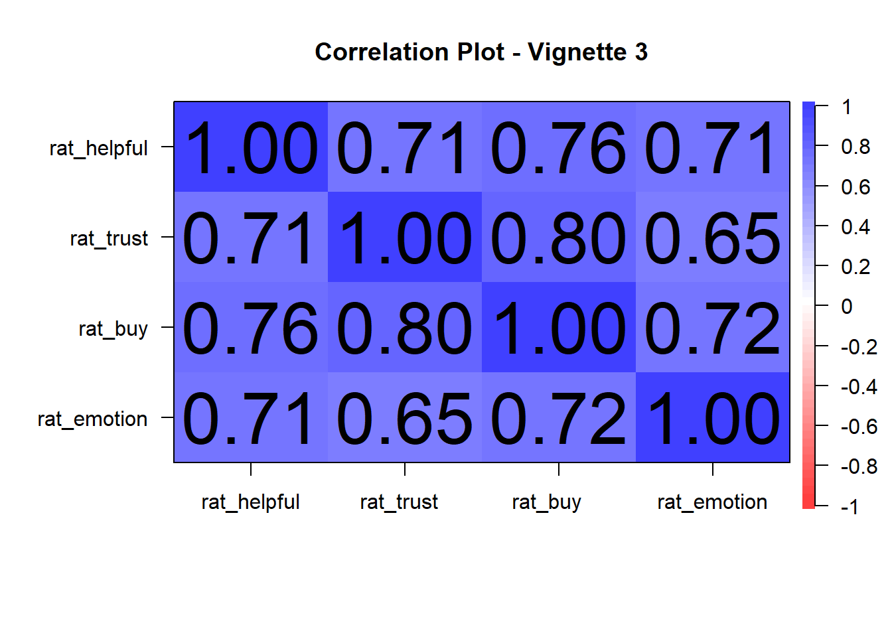
Parallel analysis: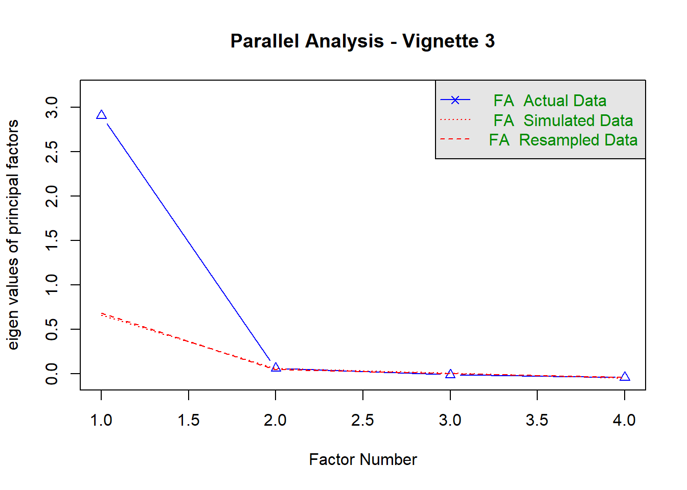
Parallel analysis suggests that the number of factors = 1 and the number of components = NA
Loadings:
ML1
rat_helpful 0.843
rat_trust 0.855
rat_buy 0.912
rat_emotion 0.796
ML1
SS loadings 2.905
Proportion Var 0.726
Selecting optimal number of clusters (k):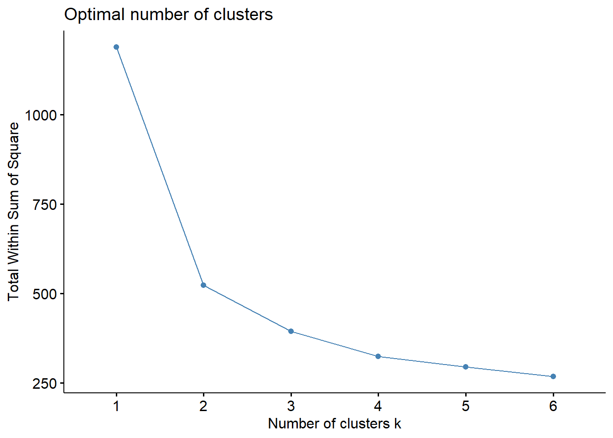
Auto-selected k = 5
K-means clustering results (k = 5 ):
[1] 51 25 94 70 58
=== Vignette: 4 ===
Correlation matrix: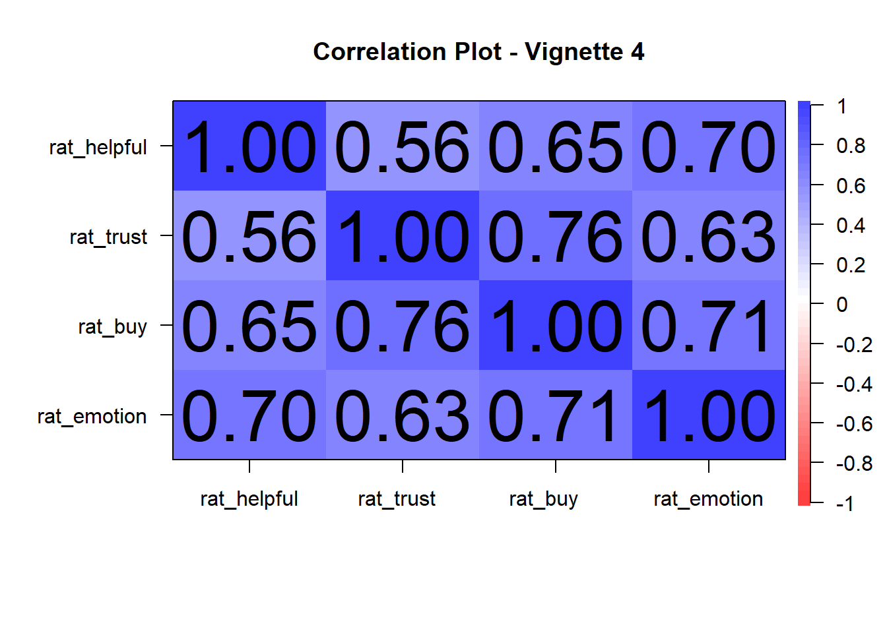
Parallel analysis:Parallel analysis suggests that the number of factors = 2 and the number of components = NA
Loadings:
ML1 ML2
rat_helpful 0.861
rat_trust 0.919
rat_buy 0.698 0.221
rat_emotion 0.136 0.735
ML1 ML2
SS loadings 1.352 1.334
Proportion Var 0.338 0.334
Cumulative Var 0.338 0.672
Selecting optimal number of clusters (k):
Auto-selected k = 5
K-means clustering results (k = 5 ):
[1] 25 52 22 91 108
=== Vignette: 5 ===
Correlation matrix: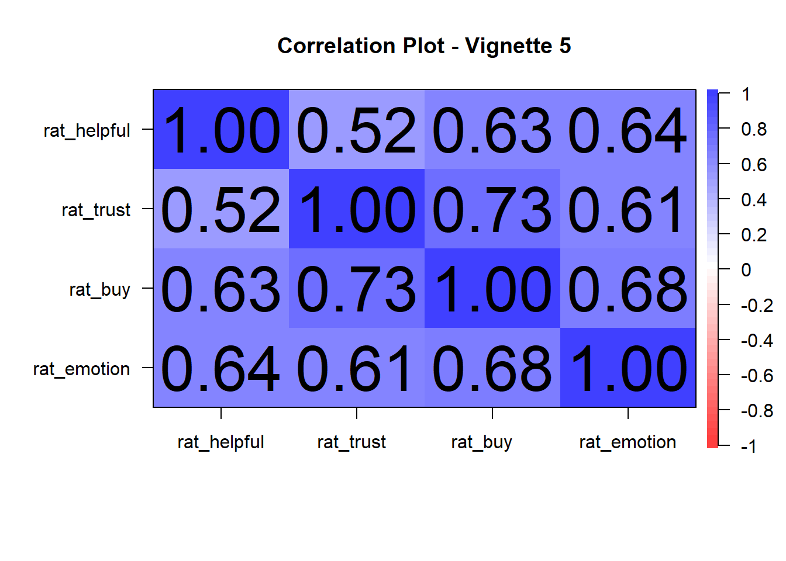
Parallel analysis: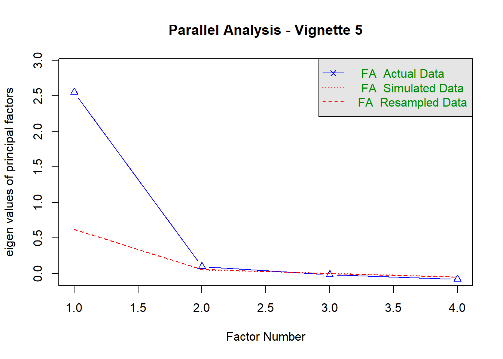
Parallel analysis suggests that the number of factors = 2 and the number of components = NA
Loadings:
ML1 ML2
rat_helpful 0.842
rat_trust 0.895
rat_buy 0.606 0.312
rat_emotion 0.261 0.589
ML1 ML2
SS loadings 1.237 1.155
Proportion Var 0.309 0.289
Cumulative Var 0.309 0.598
Selecting optimal number of clusters (k):Auto-selected k = 5
K-means clustering results (k = 5 ):
[1] 38 104 36 38 82
=== Vignette: 6 ===
Correlation matrix:
Parallel analysis:
Parallel analysis suggests that the number of factors = 1 and the number of components = NA
Loadings:
ML1
rat_helpful 0.674
rat_trust 0.774
rat_buy 0.871
rat_emotion 0.783
ML1
SS loadings 2.425
Proportion Var 0.606
Selecting optimal number of clusters (k):Auto-selected k = 4
K-means clustering results (k = 4 ):
[1] 99 52 98 49# === NEW: Combine all vignette cluster assignments into one data frame ===
cluster_df <- bind_rows(cluster_assignments)
# Preview
head(cluster_df) PROLIFIC_PID Vignette Cluster
1...1 63c08fa9f3882764b4e8e7dd 1 2
2...2 5fff0b0bcbc37a5f5928ed26 1 1
3...3 615dfd1954be2c1b879d6e26 1 1
4...4 627bbf69ab2788507bc421a2 1 2
5...5 60993696b2cca36f8aafd770 1 2
6...6 5e5832478c2b6f03f9acd234 1 2# Reshape to wide format: one row per PROLIFIC_PID, columns for each Vignette
cluster_wide <- cluster_df %>%
mutate(Vignette = paste0("V", Vignette)) %>%
pivot_wider(
names_from = Vignette,
values_from = Cluster
)
# View result
head(cluster_wide)# A tibble: 6 × 7
PROLIFIC_PID V1 V2 V3 V4 V5 V6
<chr> <int> <int> <int> <int> <int> <int>
1 63c08fa9f3882764b4e8e7dd 2 3 4 4 2 3
2 5fff0b0bcbc37a5f5928ed26 1 1 1 5 2 3
3 615dfd1954be2c1b879d6e26 1 1 5 5 5 3
4 627bbf69ab2788507bc421a2 2 1 3 4 5 1
5 60993696b2cca36f8aafd770 2 1 1 5 2 1
6 5e5832478c2b6f03f9acd234 2 5 2 3 1 2# Get vignette cluster columns (excluding PROLIFIC_PID)
vignette_cols <- setdiff(colnames(cluster_wide), "PROLIFIC_PID")
# All pairwise combinations of vignette cluster columns
combinations <- combn(vignette_cols, 2, simplify = FALSE)
# Run Chi-squared tests
for (pair in combinations) {
cat("\nChi-squared test between", pair[1], "and", pair[2], "\n")
tab <- table(cluster_wide[[pair[1]]], cluster_wide[[pair[2]]])
print(tab)
# Only run if the table has no 0-only rows/cols
if (all(rowSums(tab) > 0) && all(colSums(tab) > 0)) {
chisq <- chisq.test(tab)
print(chisq)
} else {
cat("Chi-squared test not valid due to empty rows/columns.\n")
}
}
Chi-squared test between V1 and V2
1 2 3 4 5
1 15 6 7 4 1
2 50 53 33 15 17
3 5 0 6 8 1
4 24 12 31 10 0Warning in chisq.test(tab): Chi-Quadrat-Approximation kann inkorrekt sein
Pearson's Chi-squared test
data: tab
X-squared = 46.34, df = 12, p-value = 6.063e-06
Chi-squared test between V1 and V3
1 2 3 4 5
1 6 1 11 8 7
2 28 23 45 31 41
3 3 0 5 12 0
4 14 1 33 19 10Warning in chisq.test(tab): Chi-Quadrat-Approximation kann inkorrekt sein
Pearson's Chi-squared test
data: tab
X-squared = 38.76, df = 12, p-value = 0.0001153
Chi-squared test between V1 and V4
1 2 3 4 5
1 3 8 1 8 13
2 19 27 17 50 55
3 0 4 1 6 9
4 3 13 3 27 31Warning in chisq.test(tab): Chi-Quadrat-Approximation kann inkorrekt sein
Pearson's Chi-squared test
data: tab
X-squared = 12.78, df = 12, p-value = 0.3852
Chi-squared test between V1 and V5
1 2 3 4 5
1 4 9 4 3 13
2 26 60 20 26 36
3 0 8 2 2 8
4 8 27 10 7 25Warning in chisq.test(tab): Chi-Quadrat-Approximation kann inkorrekt sein
Pearson's Chi-squared test
data: tab
X-squared = 12.762, df = 12, p-value = 0.3866
Chi-squared test between V1 and V6
1 2 3 4
1 6 7 13 7
2 51 34 54 29
3 9 1 7 3
4 33 10 24 10Warning in chisq.test(tab): Chi-Quadrat-Approximation kann inkorrekt sein
Pearson's Chi-squared test
data: tab
X-squared = 10.98, df = 9, p-value = 0.2771
Chi-squared test between V2 and V3
1 2 3 4 5
1 21 5 29 21 18
2 14 8 23 12 14
3 10 3 26 22 16
4 5 0 13 15 4
5 1 9 3 0 6Warning in chisq.test(tab): Chi-Quadrat-Approximation kann inkorrekt sein
Pearson's Chi-squared test
data: tab
X-squared = 61.496, df = 16, p-value = 2.924e-07
Chi-squared test between V2 and V4
1 2 3 4 5
1 9 14 3 39 29
2 8 11 10 21 21
3 1 12 3 22 39
4 0 14 1 5 17
5 7 1 5 4 2Warning in chisq.test(tab): Chi-Quadrat-Approximation kann inkorrekt sein
Pearson's Chi-squared test
data: tab
X-squared = 74.496, df = 16, p-value = 1.607e-09
Chi-squared test between V2 and V5
1 2 3 4 5
1 9 33 11 13 28
2 11 18 6 11 25
3 10 31 10 6 20
4 4 16 9 1 7
5 4 6 0 7 2Warning in chisq.test(tab): Chi-Quadrat-Approximation kann inkorrekt sein
Pearson's Chi-squared test
data: tab
X-squared = 31.638, df = 16, p-value = 0.01114
Chi-squared test between V2 and V6
1 2 3 4
1 32 14 36 12
2 28 19 16 8
3 23 8 25 21
4 10 3 20 4
5 6 8 1 4Warning in chisq.test(tab): Chi-Quadrat-Approximation kann inkorrekt sein
Pearson's Chi-squared test
data: tab
X-squared = 37.081, df = 12, p-value = 0.0002167
Chi-squared test between V3 and V4
1 2 3 4 5
1 5 2 10 13 21
2 9 0 6 8 2
3 2 13 1 36 42
4 1 34 0 9 26
5 8 3 5 25 17Warning in chisq.test(tab): Chi-Quadrat-Approximation kann inkorrekt sein
Pearson's Chi-squared test
data: tab
X-squared = 138.56, df = 16, p-value < 2.2e-16
Chi-squared test between V3 and V5
1 2 3 4 5
1 11 16 2 9 13
2 6 3 0 10 6
3 7 38 11 3 35
4 2 31 22 2 13
5 12 16 1 14 15Warning in chisq.test(tab): Chi-Quadrat-Approximation kann inkorrekt sein
Pearson's Chi-squared test
data: tab
X-squared = 95.034, df = 16, p-value = 2.928e-13
Chi-squared test between V3 and V6
1 2 3 4
1 23 9 11 8
2 7 13 1 4
3 38 6 36 14
4 13 4 41 12
5 18 20 9 11Warning in chisq.test(tab): Chi-Quadrat-Approximation kann inkorrekt sein
Pearson's Chi-squared test
data: tab
X-squared = 76.247, df = 12, p-value = 2.134e-11
Chi-squared test between V4 and V5
1 2 3 4 5
1 4 2 0 12 7
2 2 18 24 0 8
3 9 3 0 5 5
4 12 26 2 17 34
5 11 55 10 4 28Warning in chisq.test(tab): Chi-Quadrat-Approximation kann inkorrekt sein
Pearson's Chi-squared test
data: tab
X-squared = 146.86, df = 16, p-value < 2.2e-16
Chi-squared test between V4 and V6
1 2 3 4
1 9 14 0 2
2 6 3 39 4
3 6 9 0 7
4 43 18 20 10
5 35 8 39 26Warning in chisq.test(tab): Chi-Quadrat-Approximation kann inkorrekt sein
Pearson's Chi-squared test
data: tab
X-squared = 111.16, df = 12, p-value < 2.2e-16
Chi-squared test between V5 and V6
1 2 3 4
1 10 11 3 14
2 31 6 45 22
3 3 1 30 2
4 10 26 1 1
5 45 8 19 10
Pearson's Chi-squared test
data: tab
X-squared = 164.9, df = 12, p-value < 2.2e-166 aaaa
# Convert factors to numeric if needed
# questionnaire_rating_long$PROLIFIC_PID <- as.factor(questionnaire_rating_long$PROLIFIC_PID)
# library(glmmLasso)
#
# fit_lasso <- glmmLasso(
# fixed = rat_mean ~ dummyPart1 + dummyPart2 + dummyPart3 + dummyPart4 + dummyPart5 + dummyPart6,
# rnd = list(PROLIFIC_PID = ~1),
# family = gaussian(link = "identity"),
# data = questionnaire_rating_long,
# lambda = 10 # tune this
# )
#
# summary(fit_lasso)library(brms)
fit_bayes <- brm(
rat_mean ~ dummyPart1 + dummyPart2 + dummyPart3 + dummyPart4 + dummyPart5 + dummyPart6 + (1 | PROLIFIC_PID),
data = questionnaire_rating_long,
family = gaussian(),
prior = set_prior("normal(0, 1)", class = "b"),
chains = 4, iter = 2000
)
summary(fit_bayes)library(relaimpo)
lm_fit <- lm(
rat_mean ~ dummyPart1 + dummyPart3 + dummyPart5 + dummyPart6,
data = questionnaire_rating_long[questionnaire_rating_long$Vignette %in% c(2,3),]
)
calc.relimp(lm_fit, type = "lmg") # "lmg" = R² decomposition### save files
setwd("outputs")
#> questionnaire
## save as .xlsx file
writexl::write_xlsx(x = questionnaire, path = "questionnaire.xlsx")
## save as R object
saveRDS(questionnaire, file = "questionnaire.rds")
#> wordlistAssociations
## save as .xlsx file
writexl::write_xlsx(x = wordlistAssociations, path = "wordlistAssociations.xlsx")
## save as R object
saveRDS(wordlistAssociations, file = "wordlistAssociations.rds")
#> edgelistAssociations
## save as .xlsx file
writexl::write_xlsx(x = edgelistAssociations, path = "edgelistAssociations.xlsx")
## save as R object
saveRDS(edgelistAssociations, file = "edgelistAssociations.rds")7 show data
DT::datatable(questionnaire, options = list(pageLength = 5))
summary(as.numeric(table(edgelistAssociations$ID)))
table(edgelistAssociations$ID)
DT::datatable(wordlistAssociations, options = list(pageLength = 5))
DT::datatable(edgelistAssociations, options = list(pageLength = 5))